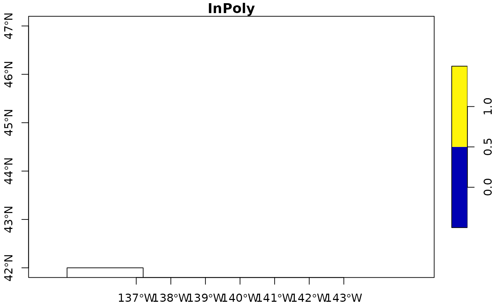

Determine if swfscDAS outputs intersect with strata polygons
Usage
das_intersects_strata(x, ...)
# S3 method for class 'list'
das_intersects_strata(x, strata.files, ...)
# S3 method for class 'data.frame'
das_intersects_strata(
x,
strata.files,
x.lon = "Lon",
x.lat = "Lat",
strata.which = FALSE,
...
)Arguments
- x
a data frame (such as an object of class
das_df) or a list. Ifxis a list, then it must be the output ofdas_effortordas_effort_sight. Ifxis a data frame, the user must also specify the coordinate columns ofxusingx.lonandx.lat- ...
ignored
- strata.files
list of path(s) of the CSV file(s) with points defining each stratum. The CSV files must contain headers and be a closed polygon. The list may be named; see 'Value' section for how these names are used
- x.lon
character; name of the longitude column of
x. Ignored ifxis a list; default is "Lon"- x.lat
character; name of the latitude column of
x. Ignored ifxis a list; default is "Lat"- strata.which
logical; indicates if the numeric column 'strata_which' should be included in the output data frame. Ignored if
xis a list; default isFALSE. See 'Value' section for more details
Value
If x is a data frame, then logical columns are added to x
indicating if each point intersected with the corresponding stratum polygon.
The names of these columns are the names of strata.files; the
element(s) of strata.files will have the name InPoly#, where '#' is
the index of that stratum polygon in strata.files. If
strata.which, then the column 'strata_which' is added to the end of
the data frame. This column contains either a 0 if the point intersects with
no strata or 2) a numeric indicating the index (in strata.files) of
the (first) strata polygon that the point intersects with.
Otherwise, i.e. if x is a list and thus the output of one of the
effort functions, then the stratum columns are added to both the segdata and
sightinfo data frames. However, note that the columns added to the sightinfo
data frame still indicate whether or not the segment midpoint was in the
corresponding stratum, rather than the sighting point itself.
Details
Assigns DAS event points or segment midpoints to strata polygons using
sf::st_intersects().
If x is a list, then 1) it must be the output of
das_effort or das_effort_sight and 2) the segment
midpoints (column names mlon and mlat, respectively) are the points checked
if they intersect with each provided stratum. If x is a data frame,
then the user must provide the columns that specify the point coordinates to
check.
x should not be an object of class das_dfr, or an object of
class das_df created with add.dtll.sight = FALSE, because the ?
and numeric event codes will have NA latitude and longitude values.
Examples
y <- system.file("extdata", "das_sample.das", package = "swfscDAS")
y.proc <- das_process(y)
y.eff <- das_effort(y.proc, method = "section", num.cores = 1)
stratum.file <- system.file("extdata", "das_sample_stratum.csv", package = "swfscDAS")
das_intersects_strata(y.eff, list(InPoly = stratum.file), x.lon = "Lon", x.lat = "Lat")
#> $segdata
#> segnum section_id section_sub_id file stlin endlin lat1
#> lat 1 1 1 das_sample.das 2 20 39.32033
#> lat1 2 2 1 das_sample.das 23 43 39.37617
#> lat2 3 3 1 das_sample.das 59 90 39.56800
#> lat3 4 4 1 das_sample.das 99 121 39.94517
#> lat4 5 5 1 das_sample.das 127 147 40.15217
#> lat5 6 6 1 das_sample.das 150 164 40.26867
#> lat6 7 7 1 das_sample.das 167 181 40.38250
#> lat7 8 8 1 das_sample.das 188 199 40.52200
#> lat8 9 9 1 das_sample.das 232 240 40.98717
#> lat9 10 10 1 das_sample.das 242 259 41.02383
#> lon1 DateTime1 lat2 lon2 DateTime2
#> lat -137.6043 2013-01-13 06:27:39 39.36716 -137.5817 2013-01-13 06:46:25
#> lat1 -137.5978 2013-01-13 06:58:04 39.51933 -137.5277 2013-01-13 07:57:05
#> lat2 -137.4530 2013-01-13 09:22:13 39.75433 -137.4107 2013-01-13 10:36:27
#> lat3 -137.3692 2013-01-13 11:51:51 40.12745 -137.2488 2013-01-13 13:16:38
#> lat4 -137.1737 2013-01-13 13:50:07 40.26617 -137.1348 2013-01-13 14:38:13
#> lat5 -137.1268 2013-01-13 14:59:19 40.37596 -137.0915 2013-01-13 15:43:08
#> lat6 -137.0977 2013-01-13 15:58:41 40.45133 -137.0628 2013-01-13 16:29:50
#> lat7 -137.0533 2013-01-13 16:59:54 40.52533 -137.0515 2013-01-13 17:01:21
#> lat8 -135.5980 2013-01-14 11:24:32 41.01582 -135.5782 2013-01-14 11:37:24
#> lat9 -135.5743 2013-01-14 11:40:38 41.04599 -135.5595 2013-01-14 11:50:29
#> mlat mlon mDateTime dist year month day mtime
#> lat 39.34377 -137.5930 2013-01-13 06:37:02 5.5577 2013 1 13 06:37:02
#> lat1 39.44767 -137.5625 2013-01-13 07:27:34 17.0106 2013 1 13 07:27:34
#> lat2 39.66117 -137.4131 2013-01-13 09:59:20 21.8086 2013 1 13 09:59:20
#> lat3 40.03679 -137.3101 2013-01-13 12:34:14 22.7090 2013 1 13 12:34:14
#> lat4 40.20895 -137.1531 2013-01-13 14:14:10 13.0922 2013 1 13 14:14:10
#> lat5 40.32254 -137.1102 2013-01-13 15:21:13 12.3011 2013 1 13 15:21:13
#> lat6 40.41714 -137.0810 2013-01-13 16:14:15 8.1984 2013 1 13 16:14:15
#> lat7 40.52365 -137.0524 2013-01-13 17:00:37 0.4016 2013 1 13 17:00:37
#> lat8 41.00151 -135.5881 2013-01-14 11:30:58 3.5940 2013 1 14 11:30:58
#> lat9 41.03500 -135.5671 2013-01-14 11:45:33 2.7600 2013 1 14 11:45:33
#> Cruise Mode OffsetGMT EffType ESWsides Trackline avgBft avgSwellHght
#> lat 1000 C 5 S 2 <NA> 3.000000 3
#> lat1 1000 C 5 S 2 <NA> 3.000000 3
#> lat2 1000 C 5 S 2 <NA> 2.500835 3
#> lat3 1000 C 5 S 2 <NA> 3.000000 3
#> lat4 1000 C 5 S 2 <NA> 3.000000 3
#> lat5 1000 C 5 S 2 <NA> 2.479576 3
#> lat6 1000 C 5 S 2 <NA> 2.682617 3
#> lat7 1000 C 5 S 2 <NA> 2.000000 3
#> lat8 1000 C 5 S 2 <NA> 2.000000 1
#> lat9 1000 C 5 S 2 <NA> 2.000000 1
#> avgHorizSun avgVertSun avgGlare avgVis avgCourse avgSpdKt InPoly
#> lat 2.000000 3 0 6.000000 23.56198 9.912395 0
#> lat1 2.000000 2 0 5.686447 27.11868 9.476263 0
#> lat2 2.000000 2 0 5.090748 95.65614 9.287725 0
#> lat3 12.000000 12 0 5.974103 34.61155 9.428340 0
#> lat4 8.000000 1 0 6.000000 20.43919 9.343919 1
#> lat5 8.520424 1 0 6.000000 16.47958 9.091830 1
#> lat6 8.000000 2 0 6.000000 25.00000 8.900000 1
#> lat7 8.000000 2 0 6.000000 30.00000 9.500000 1
#> lat8 NA NA NA 4.000000 35.00000 9.500000 1
#> lat9 NA NA NA 4.000000 23.00000 9.600000 1
#>
#> $sightinfo
#> segnum mlat mlon Event DateTime year Lat Lon
#> 1 1 39.34377 -137.5930 S 2013-01-13 06:46:02 2013 39.36617 -137.5820
#> 2 2 39.44767 -137.5625 S 2013-01-13 07:56:22 2013 39.51767 -137.5285
#> 3 3 39.66117 -137.4131 t 2013-01-13 09:34:27 2013 39.59733 -137.4400
#> 4 5 40.20895 -137.1531 t 2013-01-13 14:02:55 2013 40.18283 -137.1622
#> 5 5 40.20895 -137.1531 S 2013-01-13 14:37:56 2013 40.26567 -137.1350
#> 6 6 40.32254 -137.1102 t 2013-01-13 15:36:47 2013 40.36050 -137.0978
#> 7 7 40.41714 -137.0810 S 2013-01-13 16:29:50 2013 40.45133 -137.0628
#> 8 8 40.52365 -137.0524 S 2013-01-13 17:00:45 2013 40.52400 -137.0522
#> 9 8 40.52365 -137.0524 S 2013-01-13 17:00:45 2013 40.52400 -137.0522
#> 10 9 41.00151 -135.5881 F 2013-01-14 11:25:32 2013 40.98950 -135.5965
#> 11 10 41.03500 -135.5671 S 2013-01-14 11:47:51 2013 41.04017 -135.5635
#> 12 10 41.03500 -135.5671 S 2013-01-14 11:47:51 2013 41.04017 -135.5635
#> 13 10 41.03500 -135.5671 S 2013-01-14 11:49:14 2013 41.04333 -135.5615
#> 14 10 41.03500 -135.5671 S 2013-01-14 11:49:14 2013 41.04333 -135.5615
#> OnEffort Cruise Mode OffsetGMT EffType ESWsides Trackline Course SpdKt Bft
#> 1 TRUE 1000 C 5 S 2 <NA> 25 10.2 3
#> 2 TRUE 1000 C 5 S 2 <NA> 26 9.7 3
#> 3 TRUE 1000 C 5 S 2 <NA> 27 9.0 3
#> 4 TRUE 1000 C 5 S 2 <NA> 20 9.3 3
#> 5 TRUE 1000 C 5 S 2 <NA> 20 9.3 3
#> 6 TRUE 1000 C 5 S 2 <NA> 16 8.9 2
#> 7 TRUE 1000 C 5 S 2 <NA> 25 8.9 2
#> 8 TRUE 1000 C 5 S 2 <NA> 30 9.5 2
#> 9 TRUE 1000 C 5 S 2 <NA> 30 9.5 2
#> 10 TRUE 1000 C 5 S 2 <NA> 35 9.5 2
#> 11 TRUE 1000 C 5 S 2 <NA> 23 9.6 2
#> 12 TRUE 1000 C 5 S 2 <NA> 23 9.6 2
#> 13 TRUE 1000 C 5 S 2 <NA> 23 9.6 2
#> 14 TRUE 1000 C 5 S 2 <NA> 23 9.6 2
#> SwellHght SwellDir WindSpdKt WindDir RainFog HorizSun VertSun Glare Vis ObsL
#> 1 3 230 10 257 1 NA NA NA 6.0 208
#> 2 3 230 10 257 3 2 2 FALSE 5.5 125
#> 3 3 230 10 257 1 2 2 FALSE 5.5 001
#> 4 3 230 6 257 1 8 1 FALSE 6.0 280
#> 5 3 230 6 257 1 8 1 FALSE 6.0 280
#> 6 3 230 6 243 1 9 1 FALSE 6.0 125
#> 7 3 230 6 243 1 8 2 FALSE 6.0 149
#> 8 3 230 6 243 1 8 2 FALSE 6.0 126
#> 9 3 230 6 243 1 8 2 FALSE 6.0 126
#> 10 1 35 5 40 3 NA NA NA 4.0 149
#> 11 1 35 5 40 3 NA NA NA 4.0 149
#> 12 1 35 5 40 3 NA NA NA 4.0 149
#> 13 1 35 5 40 3 NA NA NA 4.0 149
#> 14 1 35 5 40 3 NA NA NA 4.0 149
#> Rec ObsR ObsInd EffortDot EventNum file_das line_num SightNo Subgroup
#> 1 280 001 <NA> TRUE 15 das_sample.das 15 1406 <NA>
#> 2 208 280 <NA> TRUE 35 das_sample.das 38 1407 <NA>
#> 3 126 149 <NA> TRUE 59 das_sample.das 65 <NA> <NA>
#> 4 001 126 <NA> TRUE 131 das_sample.das 137 <NA> <NA>
#> 5 001 126 <NA> TRUE 136 das_sample.das 142 1408 <NA>
#> 6 208 280 <NA> TRUE 153 das_sample.das 162 <NA> <NA>
#> 7 125 208 <NA> TRUE 167 das_sample.das 176 1409 <NA>
#> 8 149 125 <NA> TRUE 181 das_sample.das 193 1410 <NA>
#> 9 149 125 <NA> TRUE 181 das_sample.das 193 1410 <NA>
#> 10 125 208 <NA> TRUE 8 das_sample.das 238 <NA> <NA>
#> 11 125 208 <NA> TRUE 18 das_sample.das 248 1412 <NA>
#> 12 125 208 <NA> TRUE 18 das_sample.das 248 1412 <NA>
#> 13 125 208 <NA> TRUE 20 das_sample.das 252 1413 <NA>
#> 14 125 208 <NA> TRUE 20 das_sample.das 252 1413 <NA>
#> SightNoDaily Obs ObsStd Bearing Reticle DistNm Cue Method Photos Birds
#> 1 20130113_1 208 TRUE 309 2.8 1.06 3 4 N N
#> 2 20130113_2 125 TRUE 326 0.4 2.97 3 4 Y N
#> 3 <NA> 280 FALSE 120 NA 0.03 NA NA <NA> <NA>
#> 4 <NA> 228 FALSE 300 NA 0.02 NA NA <NA> <NA>
#> 5 20130113_3 280 TRUE 270 14.0 0.28 3 4 N N
#> 6 <NA> 231 FALSE 45 NA 0.05 NA NA <NA> <NA>
#> 7 20130113_4 149 TRUE 344 0.2 3.68 3 4 Y Y
#> 8 20130113_5 125 TRUE 70 1.4 1.66 3 4 Y N
#> 9 20130113_5 125 TRUE 70 1.4 1.66 3 4 Y N
#> 10 <NA> 149 TRUE 309 1.7 1.47 NA NA <NA> <NA>
#> 11 20130114_1 149 TRUE 359 0.3 3.28 2 4 Y N
#> 12 20130114_1 149 TRUE 359 0.3 3.28 2 4 Y N
#> 13 20130114_2 208 TRUE 38 0.8 2.23 3 4 Y N
#> 14 20130114_2 208 TRUE 38 0.8 2.23 3 4 Y N
#> CalibSchool PhotosAerial Biopsy Prob nSp Mixed SpCode SpCodeProb
#> 1 <NA> <NA> <NA> FALSE 1 FALSE 018 <NA>
#> 2 <NA> <NA> <NA> FALSE 1 FALSE 076 <NA>
#> 3 <NA> <NA> <NA> NA NA NA LV <NA>
#> 4 <NA> <NA> <NA> NA NA NA DC <NA>
#> 5 <NA> <NA> <NA> FALSE 1 FALSE 037 <NA>
#> 6 <NA> <NA> <NA> NA NA NA DC <NA>
#> 7 <NA> <NA> <NA> FALSE 1 FALSE 016 <NA>
#> 8 <NA> <NA> <NA> FALSE 2 TRUE 013 <NA>
#> 9 <NA> <NA> <NA> FALSE 2 TRUE 016 <NA>
#> 10 <NA> <NA> <NA> NA NA NA <NA> <NA>
#> 11 <NA> <NA> <NA> FALSE 2 TRUE 018 <NA>
#> 12 <NA> <NA> <NA> FALSE 2 TRUE 277 <NA>
#> 13 <NA> <NA> <NA> TRUE 2 TRUE 016 016
#> 14 <NA> <NA> <NA> TRUE 2 TRUE 277 016
#> GsSchoolBest GsSchoolHigh GsSchoolLow GsSpBest GsSpHigh GsSpLow
#> 1 NA NA 42.333333 NA NA 42.333333
#> 2 8.00000 14.00 5.666667 8.00000 14.0000 5.666667
#> 3 1.00000 NA NA 1.00000 NA NA
#> 4 1.00000 NA NA 1.00000 NA NA
#> 5 10.66667 20.00 10.666667 10.66667 20.0000 10.666667
#> 6 1.00000 NA NA 1.00000 NA NA
#> 7 46.66667 79.00 46.666667 46.66667 79.0000 46.666667
#> 8 41.75000 72.75 41.750000 30.06000 52.3800 30.060000
#> 9 41.75000 72.75 41.750000 11.69000 20.3700 11.690000
#> 10 NA NA NA NA NA NA
#> 11 151.50000 249.00 151.500000 128.77500 211.6500 128.775000
#> 12 151.50000 249.00 151.500000 22.72500 37.3500 22.725000
#> 13 21.25000 37.75 21.250000 15.08750 26.8025 15.087500
#> 14 21.25000 37.75 21.250000 6.16250 10.9475 6.162500
#> CourseSchool TurtleJFR TurtleAge TurtleCapt PerpDistKm included InPoly
#> 1 NA <NA> <NA> <NA> 1.52563078 TRUE 0
#> 2 NA <NA> <NA> <NA> 3.07580701 TRUE 0
#> 3 NA <NA> A N 0.04811637 FALSE 0
#> 4 NA <NA> J N 0.03207758 FALSE 1
#> 5 NA <NA> <NA> <NA> 0.51856000 TRUE 1
#> 6 NA <NA> A <NA> 0.06547809 FALSE 1
#> 7 NA <NA> <NA> <NA> 1.87856781 TRUE 1
#> 8 NA <NA> <NA> <NA> 2.88891582 TRUE 1
#> 9 NA <NA> <NA> <NA> 2.88891582 TRUE 1
#> 10 NA <NA> <NA> <NA> 2.11573325 TRUE 1
#> 11 NA <NA> <NA> <NA> 0.10601569 TRUE 1
#> 12 NA <NA> <NA> <NA> 0.10601569 TRUE 1
#> 13 NA <NA> <NA> <NA> 2.54265727 TRUE 1
#> 14 NA <NA> <NA> <NA> 2.54265727 TRUE 1
#>
#> $randpicks
#> effort_section randpicks
#> 1 1 NA
#> 2 2 NA
#> 3 3 NA
#> 4 4 NA
#> 5 5 NA
#> 6 6 NA
#> 7 7 NA
#> 8 8 NA
#> 9 9 NA
#> 10 10 NA
#>
das_intersects_strata(y.proc, list(stratum.file))
#> Event DateTime Lat Lon OnEffort Cruise Mode OffsetGMT
#> 1 B 2013-01-13 06:27:39 39.32033 -137.6043 TRUE 1000 C 5
#> 2 R 2013-01-13 06:27:39 39.32033 -137.6043 TRUE 1000 C 5
#> 3 P 2013-01-13 06:27:39 39.32033 -137.6043 TRUE 1000 C 5
#> 4 V 2013-01-13 06:27:39 39.32033 -137.6043 TRUE 1000 C 5
#> 5 N 2013-01-13 06:27:39 39.32033 -137.6043 TRUE 1000 C 5
#> 6 W 2013-01-13 06:27:39 39.32033 -137.6043 TRUE 1000 C 5
#> 7 V 2013-01-13 06:29:56 39.32583 -137.6018 TRUE 1000 C 5
#> 8 W 2013-01-13 06:30:10 39.32650 -137.6015 TRUE 1000 C 5
#> 9 W 2013-01-13 06:34:01 39.33600 -137.5970 TRUE 1000 C 5
#> 10 * 2013-01-13 06:37:25 39.34450 -137.5927 TRUE 1000 C 5
#> 11 P 2013-01-13 06:41:08 39.35400 -137.5880 TRUE 1000 C 5
#> 12 V 2013-01-13 06:41:08 39.35400 -137.5880 TRUE 1000 C 5
#> 13 N 2013-01-13 06:41:08 39.35400 -137.5880 TRUE 1000 C 5
#> 14 W 2013-01-13 06:41:08 39.35400 -137.5880 TRUE 1000 C 5
#> 15 S 2013-01-13 06:46:02 39.36617 -137.5820 TRUE 1000 C 5
#> 16 A 2013-01-13 06:46:02 39.36617 -137.5820 TRUE 1000 C 5
#> 17 1 2013-01-13 06:46:02 39.36617 -137.5820 TRUE 1000 C 5
#> 18 2 2013-01-13 06:46:02 39.36617 -137.5820 TRUE 1000 C 5
#> 19 3 2013-01-13 06:46:02 39.36617 -137.5820 TRUE 1000 C 5
#> 20 E 2013-01-13 06:46:25 39.36717 -137.5817 FALSE 1000 C 5
#> 21 * 2013-01-13 06:47:25 39.36967 -137.5807 FALSE 1000 C 5
#> 22 * 2013-01-13 06:57:25 39.37467 -137.5987 FALSE 1000 C 5
#> 23 R 2013-01-13 06:58:04 39.37617 -137.5978 TRUE 1000 C 5
#> 24 P 2013-01-13 06:58:04 39.37617 -137.5978 TRUE 1000 C 5
#> 25 V 2013-01-13 06:58:04 39.37617 -137.5978 TRUE 1000 C 5
#> 26 N 2013-01-13 06:58:04 39.37617 -137.5978 TRUE 1000 C 5
#> 27 W 2013-01-13 06:58:04 39.37617 -137.5978 TRUE 1000 C 5
#> 28 * 2013-01-13 07:07:25 39.39883 -137.5868 TRUE 1000 C 5
#> 29 * 2013-01-13 07:17:25 39.42317 -137.5747 TRUE 1000 C 5
#> 30 P 2013-01-13 07:20:02 39.42950 -137.5715 TRUE 1000 C 5
#> 31 V 2013-01-13 07:20:02 39.42950 -137.5715 TRUE 1000 C 5
#> 32 N 2013-01-13 07:20:02 39.42950 -137.5715 TRUE 1000 C 5
#> 33 W 2013-01-13 07:20:02 39.42950 -137.5715 TRUE 1000 C 5
#> 34 * 2013-01-13 07:27:25 39.44733 -137.5627 TRUE 1000 C 5
#> 35 * 2013-01-13 07:37:25 39.47133 -137.5507 TRUE 1000 C 5
#> 36 W 2013-01-13 07:38:06 39.47300 -137.5500 TRUE 1000 C 5
#> 37 * 2013-01-13 07:47:25 39.49567 -137.5390 TRUE 1000 C 5
#> 38 S 2013-01-13 07:56:22 39.51767 -137.5285 TRUE 1000 C 5
#> 39 A 2013-01-13 07:56:22 39.51767 -137.5285 TRUE 1000 C 5
#> 40 1 2013-01-13 07:56:22 39.51767 -137.5285 TRUE 1000 C 5
#> 41 2 2013-01-13 07:56:22 39.51767 -137.5285 TRUE 1000 C 5
#> 42 3 2013-01-13 07:56:22 39.51767 -137.5285 TRUE 1000 C 5
#> 43 E 2013-01-13 07:57:05 39.51933 -137.5277 FALSE 1000 C 5
#> 44 * 2013-01-13 07:57:25 39.52017 -137.5272 FALSE 1000 C 5
#> 45 s 2013-01-13 08:06:00 39.54217 -137.5263 FALSE 1000 C 5
#> 46 * 2013-01-13 08:07:25 39.54583 -137.5262 FALSE 1000 C 5
#> 47 s 2013-01-13 08:08:58 39.55000 -137.5255 FALSE 1000 C 5
#> 48 s 2013-01-13 08:15:32 39.56000 -137.5218 FALSE 1000 C 5
#> 49 * 2013-01-13 08:17:25 39.56233 -137.5210 FALSE 1000 C 5
#> 50 s 2013-01-13 08:17:28 39.56233 -137.5210 FALSE 1000 C 5
#> 51 s 2013-01-13 08:19:39 39.56483 -137.5197 FALSE 1000 C 5
#> 52 s 2013-01-13 08:26:45 39.56400 -137.5140 FALSE 1000 C 5
#> 53 * 2013-01-13 08:27:25 39.56333 -137.5133 FALSE 1000 C 5
#> 54 * 2013-01-13 08:37:25 39.54867 -137.5007 FALSE 1000 C 5
#> 55 * 2013-01-13 08:47:25 39.54533 -137.4807 FALSE 1000 C 5
#> 56 * 2013-01-13 08:57:25 39.54433 -137.4717 FALSE 1000 C 5
#> 57 * 2013-01-13 09:07:25 39.54333 -137.4627 FALSE 1000 C 5
#> 58 * 2013-01-13 09:17:25 39.55833 -137.4573 FALSE 1000 C 5
#> 59 R 2013-01-13 09:22:13 39.56800 -137.4530 TRUE 1000 C 5
#> 60 P 2013-01-13 09:22:13 39.56800 -137.4530 TRUE 1000 C 5
#> 61 V 2013-01-13 09:22:13 39.56800 -137.4530 TRUE 1000 C 5
#> 62 N 2013-01-13 09:22:13 39.56800 -137.4530 TRUE 1000 C 5
#> 63 W 2013-01-13 09:22:13 39.56800 -137.4530 TRUE 1000 C 5
#> 64 * 2013-01-13 09:27:25 39.57983 -137.4475 TRUE 1000 C 5
#> 65 t 2013-01-13 09:34:27 39.59733 -137.4400 TRUE 1000 C 5
#> 66 * 2013-01-13 09:37:25 39.60467 -137.4368 TRUE 1000 C 5
#> 67 * 2013-01-13 09:47:25 39.62983 -137.4262 TRUE 1000 C 5
#> 68 * 2013-01-13 09:57:25 39.65517 -137.4155 TRUE 1000 C 5
#> 69 W 2013-01-13 09:59:38 39.66083 -137.4132 TRUE 1000 C 5
#> 70 V 2013-01-13 09:59:50 39.66133 -137.4130 TRUE 1000 C 5
#> 71 C 2013-01-13 10:04:23 39.67300 -137.4083 TRUE 1000 C 5
#> 72 P 2013-01-13 10:04:35 39.67350 -137.4080 TRUE 1000 C 5
#> 73 V 2013-01-13 10:04:35 39.67350 -137.4080 TRUE 1000 C 5
#> 74 N 2013-01-13 10:04:35 39.67350 -137.4080 TRUE 1000 C 5
#> 75 W 2013-01-13 10:04:35 39.67350 -137.4080 TRUE 1000 C 5
#> 76 * 2013-01-13 10:07:25 39.68083 -137.4050 TRUE 1000 C 5
#> 77 V 2013-01-13 10:11:00 39.69000 -137.4012 TRUE 1000 C 5
#> 78 W 2013-01-13 10:11:09 39.69050 -137.4010 TRUE 1000 C 5
#> 79 * 2013-01-13 10:17:25 39.70650 -137.3943 TRUE 1000 C 5
#> 80 N 2013-01-13 10:20:38 39.71483 -137.3920 TRUE 1000 C 5
#> 81 C 2013-01-13 10:20:43 39.71483 -137.3920 TRUE 1000 C 5
#> 82 * 2013-01-13 10:27:25 39.73150 -137.3993 TRUE 1000 C 5
#> 83 W 2013-01-13 10:30:28 39.73917 -137.4032 TRUE 1000 C 5
#> 84 W 2013-01-13 10:35:14 39.75117 -137.4092 TRUE 1000 C 5
#> 85 P 2013-01-13 10:36:06 39.75350 -137.4103 TRUE 1000 C 5
#> 86 V 2013-01-13 10:36:06 39.75350 -137.4103 TRUE 1000 C 5
#> 87 N 2013-01-13 10:36:06 39.75350 -137.4103 TRUE 1000 C 5
#> 88 W 2013-01-13 10:36:06 39.75350 -137.4103 TRUE 1000 C 5
#> 89 E 2013-01-13 10:36:27 39.75433 -137.4107 FALSE 1000 C 5
#> 90 * 2013-01-13 10:37:25 39.75683 -137.4118 FALSE 1000 C 5
#> 91 * 2013-01-13 10:47:25 39.78450 -137.4093 FALSE 1000 C 5
#> 92 * 2013-01-13 10:57:25 39.81250 -137.4087 FALSE 1000 C 5
#> 93 * 2013-01-13 11:07:25 39.83983 -137.4100 FALSE 1000 C 5
#> 94 * 2013-01-13 11:17:25 39.86700 -137.4110 FALSE 1000 C 5
#> 95 * 2013-01-13 11:27:25 39.89000 -137.4000 FALSE 1000 C 5
#> 96 * 2013-01-13 11:37:25 39.91233 -137.3875 FALSE 1000 C 5
#> 97 * 2013-01-13 11:47:25 39.93500 -137.3750 FALSE 1000 C 5
#> 98 R 2013-01-13 11:51:51 39.94517 -137.3692 TRUE 1000 C 5
#> 99 P 2013-01-13 11:51:51 39.94517 -137.3692 TRUE 1000 C 5
#> 100 V 2013-01-13 11:51:51 39.94517 -137.3692 TRUE 1000 C 5
#> 101 N 2013-01-13 11:51:51 39.94517 -137.3692 TRUE 1000 C 5
#> 102 W 2013-01-13 11:51:51 39.94517 -137.3692 TRUE 1000 C 5
#> 103 * 2013-01-13 11:57:25 39.95767 -137.3613 TRUE 1000 C 5
#> 104 P 2013-01-13 12:02:29 39.96900 -137.3542 TRUE 1000 C 5
#> 105 V 2013-01-13 12:02:29 39.96900 -137.3542 TRUE 1000 C 5
#> 106 N 2013-01-13 12:02:29 39.96900 -137.3542 TRUE 1000 C 5
#> 107 W 2013-01-13 12:02:29 39.96900 -137.3542 TRUE 1000 C 5
#> 108 * 2013-01-13 12:07:25 39.97983 -137.3472 TRUE 1000 C 5
#> 109 W 2013-01-13 12:11:06 39.98767 -137.3418 TRUE 1000 C 5
#> 110 * 2013-01-13 12:17:25 40.00117 -137.3332 TRUE 1000 C 5
#> 111 * 2013-01-13 12:27:25 40.02183 -137.3197 TRUE 1000 C 5
#> 112 * 2013-01-13 12:37:25 40.04317 -137.3060 TRUE 1000 C 5
#> 113 P 2013-01-13 12:43:14 40.05567 -137.2978 TRUE 1000 C 5
#> 114 V 2013-01-13 12:43:14 40.05567 -137.2978 TRUE 1000 C 5
#> 115 N 2013-01-13 12:43:14 40.05567 -137.2978 TRUE 1000 C 5
#> 116 W 2013-01-13 12:43:14 40.05567 -137.2978 TRUE 1000 C 5
#> 117 * 2013-01-13 12:47:25 40.06450 -137.2920 TRUE 1000 C 5
#> 118 * 2013-01-13 12:57:25 40.08583 -137.2777 TRUE 1000 C 5
#> 119 * 2013-01-13 13:07:25 40.10750 -137.2627 TRUE 1000 C 5
#> 120 E 2013-01-13 13:16:38 40.12750 -137.2487 FALSE 1000 C 5
#> 121 * 2013-01-13 13:17:25 40.12917 -137.2477 FALSE 1000 C 5
#> 122 * 2013-01-13 13:27:25 40.13817 -137.2248 FALSE 1000 C 5
#> 123 t 2013-01-13 13:35:18 40.14000 -137.2048 FALSE 1000 C 5
#> 124 * 2013-01-13 13:37:25 40.14100 -137.1993 FALSE 1000 C 5
#> 125 * 2013-01-13 13:47:25 40.14717 -137.1782 FALSE 1000 C 5
#> 126 R 2013-01-13 13:50:07 40.15217 -137.1737 TRUE 1000 C 5
#> 127 P 2013-01-13 13:50:07 40.15217 -137.1737 TRUE 1000 C 5
#> 128 V 2013-01-13 13:50:07 40.15217 -137.1737 TRUE 1000 C 5
#> 129 N 2013-01-13 13:50:07 40.15217 -137.1737 TRUE 1000 C 5
#> 130 W 2013-01-13 13:50:07 40.15217 -137.1737 TRUE 1000 C 5
#> 131 * 2013-01-13 13:57:25 40.16967 -137.1670 TRUE 1000 C 5
#> 132 P 2013-01-13 14:00:31 40.17700 -137.1642 TRUE 1000 C 5
#> 133 V 2013-01-13 14:00:31 40.17700 -137.1642 TRUE 1000 C 5
#> 134 N 2013-01-13 14:00:31 40.17700 -137.1642 TRUE 1000 C 5
#> 135 W 2013-01-13 14:00:31 40.17700 -137.1642 TRUE 1000 C 5
#> 136 t 2013-01-13 14:02:55 40.18283 -137.1622 TRUE 1000 C 5
#> 137 * 2013-01-13 14:07:25 40.19333 -137.1583 TRUE 1000 C 5
#> 138 * 2013-01-13 14:17:25 40.21667 -137.1505 TRUE 1000 C 5
#> 139 * 2013-01-13 14:27:25 40.24017 -137.1432 TRUE 1000 C 5
#> 140 * 2013-01-13 14:37:25 40.26417 -137.1353 TRUE 1000 C 5
#> 141 S 2013-01-13 14:37:56 40.26567 -137.1350 TRUE 1000 C 5
#> 142 A 2013-01-13 14:37:56 40.26567 -137.1350 TRUE 1000 C 5
#> 143 1 2013-01-13 14:37:56 40.26567 -137.1350 TRUE 1000 C 5
#> 144 2 2013-01-13 14:37:56 40.26567 -137.1350 TRUE 1000 C 5
#> 145 3 2013-01-13 14:37:56 40.26567 -137.1350 TRUE 1000 C 5
#> 146 E 2013-01-13 14:38:13 40.26617 -137.1348 FALSE 1000 C 5
#> 147 * 2013-01-13 14:47:25 40.26317 -137.1353 FALSE 1000 C 5
#> 148 * 2013-01-13 14:57:25 40.26383 -137.1282 FALSE 1000 C 5
#> 149 R 2013-01-13 14:59:19 40.26867 -137.1268 TRUE 1000 C 5
#> 150 P 2013-01-13 14:59:19 40.26867 -137.1268 TRUE 1000 C 5
#> 151 V 2013-01-13 14:59:19 40.26867 -137.1268 TRUE 1000 C 5
#> 152 N 2013-01-13 14:59:19 40.26867 -137.1268 TRUE 1000 C 5
#> 153 W 2013-01-13 14:59:19 40.26867 -137.1268 TRUE 1000 C 5
#> 154 * 2013-01-13 15:07:25 40.28850 -137.1205 TRUE 1000 C 5
#> 155 * 2013-01-13 15:17:25 40.31300 -137.1132 TRUE 1000 C 5
#> 156 P 2013-01-13 15:20:26 40.32033 -137.1108 TRUE 1000 C 5
#> 157 V 2013-01-13 15:20:26 40.32033 -137.1108 TRUE 1000 C 5
#> 158 N 2013-01-13 15:20:26 40.32033 -137.1108 TRUE 1000 C 5
#> 159 W 2013-01-13 15:20:26 40.32033 -137.1108 TRUE 1000 C 5
#> 160 * 2013-01-13 15:27:25 40.33700 -137.1057 TRUE 1000 C 5
#> 161 t 2013-01-13 15:36:47 40.36050 -137.0978 TRUE 1000 C 5
#> 162 * 2013-01-13 15:37:25 40.36217 -137.0973 TRUE 1000 C 5
#> 163 E 2013-01-13 15:43:08 40.37600 -137.0915 FALSE 1000 C 5
#> 164 * 2013-01-13 15:47:25 40.37933 -137.0927 FALSE 1000 C 5
#> 165 * 2013-01-13 15:57:25 40.37950 -137.0990 FALSE 1000 C 5
#> 166 R 2013-01-13 15:58:41 40.38250 -137.0977 TRUE 1000 C 5
#> 167 P 2013-01-13 15:58:41 40.38250 -137.0977 TRUE 1000 C 5
#> 168 V 2013-01-13 15:58:41 40.38250 -137.0977 TRUE 1000 C 5
#> 169 N 2013-01-13 15:58:41 40.38250 -137.0977 TRUE 1000 C 5
#> 170 W 2013-01-13 15:58:41 40.38250 -137.0977 TRUE 1000 C 5
#> 171 * 2013-01-13 16:07:25 40.40200 -137.0885 TRUE 1000 C 5
#> 172 * 2013-01-13 16:17:25 40.42383 -137.0777 TRUE 1000 C 5
#> 173 V 2013-01-13 16:20:02 40.42967 -137.0745 TRUE 1000 C 5
#> 174 * 2013-01-13 16:27:25 40.44600 -137.0658 TRUE 1000 C 5
#> 175 S 2013-01-13 16:29:50 40.45133 -137.0628 TRUE 1000 C 5
#> 176 A 2013-01-13 16:29:50 40.45133 -137.0628 TRUE 1000 C 5
#> 177 1 2013-01-13 16:29:50 40.45133 -137.0628 TRUE 1000 C 5
#> 178 2 2013-01-13 16:29:50 40.45133 -137.0628 TRUE 1000 C 5
#> 179 3 2013-01-13 16:29:50 40.45133 -137.0628 TRUE 1000 C 5
#> 180 E 2013-01-13 16:29:50 40.45133 -137.0628 FALSE 1000 C 5
#> 181 s 2013-01-13 16:36:34 40.46667 -137.0570 FALSE 1000 C 5
#> 182 * 2013-01-13 16:37:25 40.46867 -137.0567 FALSE 1000 C 5
#> 183 * 2013-01-13 16:47:25 40.49250 -137.0563 FALSE 1000 C 5
#> 184 C 2013-01-13 16:55:27 40.51250 -137.0593 FALSE 1000 C 5
#> 185 * 2013-01-13 16:57:25 40.51650 -137.0567 FALSE 1000 C 5
#> 186 R 2013-01-13 16:59:54 40.52200 -137.0533 TRUE 1000 C 5
#> 187 P 2013-01-13 16:59:54 40.52200 -137.0533 TRUE 1000 C 5
#> 188 V 2013-01-13 16:59:54 40.52200 -137.0533 TRUE 1000 C 5
#> 189 N 2013-01-13 16:59:54 40.52200 -137.0533 TRUE 1000 C 5
#> 190 W 2013-01-13 16:59:54 40.52200 -137.0533 TRUE 1000 C 5
#> 191 S 2013-01-13 17:00:45 40.52400 -137.0522 TRUE 1000 C 5
#> 192 A 2013-01-13 17:00:45 40.52400 -137.0522 TRUE 1000 C 5
#> 193 1 2013-01-13 17:00:45 40.52400 -137.0522 TRUE 1000 C 5
#> 194 2 2013-01-13 17:00:45 40.52400 -137.0522 TRUE 1000 C 5
#> 195 3 2013-01-13 17:00:45 40.52400 -137.0522 TRUE 1000 C 5
#> 196 4 2013-01-13 17:00:45 40.52400 -137.0522 TRUE 1000 C 5
#> 197 E 2013-01-13 17:01:21 40.52533 -137.0515 FALSE 1000 C 5
#> 198 * 2013-01-13 17:07:25 40.52167 -137.0392 FALSE 1000 C 5
#> 199 t 2013-01-13 17:08:11 40.52083 -137.0383 FALSE 1000 C 5
#> 200 * 2013-01-13 17:17:25 40.51983 -137.0377 FALSE 1000 C 5
#> 201 * 2013-01-13 17:27:25 40.51750 -137.0427 FALSE 1000 C 5
#> 202 * 2013-01-13 17:37:25 40.50750 -137.0418 FALSE 1000 C 5
#> 203 t 2013-01-13 17:45:10 40.50450 -137.0437 FALSE 1000 C 5
#> 204 * 2013-01-13 17:47:32 40.50383 -137.0443 FALSE 1000 C 5
#> 205 * 2013-01-13 17:57:32 40.50033 -137.0472 FALSE 1000 C 5
#> 206 * 2013-01-13 18:07:32 40.50183 -137.0530 FALSE 1000 C 5
#> 207 * 2013-01-13 18:17:32 40.50567 -137.0432 FALSE 1000 C 5
#> 208 * 2013-01-14 08:45:06 40.70300 -135.8103 FALSE 1000 <NA> 5
#> 209 * 2013-01-14 08:55:06 40.71917 -135.7988 FALSE 1000 <NA> 5
#> 210 * 2013-01-14 09:05:06 40.73533 -135.7875 FALSE 1000 <NA> 5
#> 211 * 2013-01-14 09:15:06 40.74917 -135.7770 FALSE 1000 <NA> 5
#> 212 S 2013-01-14 09:17:21 40.75183 -135.7748 FALSE 1000 <NA> 5
#> 213 A 2013-01-14 09:17:21 40.75183 -135.7748 FALSE 1000 <NA> 5
#> 214 1 2013-01-14 09:17:21 40.75183 -135.7748 FALSE 1000 <NA> 5
#> 215 C 2013-01-14 09:18:04 40.75283 -135.7742 FALSE 1000 <NA> 5
#> 216 * 2013-01-14 09:25:06 40.76233 -135.7655 FALSE 1000 <NA> 5
#> 217 * 2013-01-14 09:35:06 40.76700 -135.7470 FALSE 1000 <NA> 5
#> 218 * 2013-01-14 09:45:06 40.77450 -135.7313 FALSE 1000 <NA> 5
#> 219 * 2013-01-14 09:55:06 40.78867 -135.7203 FALSE 1000 <NA> 5
#> 220 * 2013-01-14 10:05:06 40.80750 -135.7092 FALSE 1000 <NA> 5
#> 221 * 2013-01-14 10:15:06 40.82933 -135.6968 FALSE 1000 <NA> 5
#> 222 * 2013-01-14 10:25:06 40.85200 -135.6843 FALSE 1000 <NA> 5
#> 223 * 2013-01-14 10:35:06 40.87550 -135.6703 FALSE 1000 <NA> 5
#> 224 * 2013-01-14 10:45:06 40.89883 -135.6565 FALSE 1000 <NA> 5
#> 225 * 2013-01-14 10:55:06 40.92183 -135.6417 FALSE 1000 <NA> 5
#> 226 * 2013-01-14 11:05:06 40.94400 -135.6273 FALSE 1000 <NA> 5
#> 227 * 2013-01-14 11:15:06 40.96633 -135.6123 FALSE 1000 <NA> 5
#> 228 B 2013-01-14 11:24:32 40.98717 -135.5980 TRUE 1000 C 5
#> 229 R 2013-01-14 11:24:32 40.98717 -135.5980 TRUE 1000 C 5
#> 230 P 2013-01-14 11:24:32 40.98717 -135.5980 TRUE 1000 C 5
#> 231 V 2013-01-14 11:24:32 40.98717 -135.5980 TRUE 1000 C 5
#> 232 N 2013-01-14 11:24:32 40.98717 -135.5980 TRUE 1000 C 5
#> 233 W 2013-01-14 11:24:32 40.98717 -135.5980 TRUE 1000 C 5
#> 234 * 2013-01-14 11:25:06 40.98833 -135.5972 TRUE 1000 C 5
#> 235 F 2013-01-14 11:25:32 40.98950 -135.5965 TRUE 1000 C 5
#> 236 * 2013-01-14 11:35:06 41.01067 -135.5817 TRUE 1000 C 5
#> 237 E 2013-01-14 11:37:24 41.01583 -135.5782 FALSE 1000 C 5
#> 238 C 2013-01-14 11:37:27 41.01600 -135.5780 FALSE 1000 C 5
#> 239 R 2013-01-14 11:40:38 41.02383 -135.5743 TRUE 1000 C 5
#> 240 P 2013-01-14 11:40:38 41.02383 -135.5743 TRUE 1000 C 5
#> 241 V 2013-01-14 11:40:38 41.02383 -135.5743 TRUE 1000 C 5
#> 242 N 2013-01-14 11:40:38 41.02383 -135.5743 TRUE 1000 C 5
#> 243 W 2013-01-14 11:40:38 41.02383 -135.5743 TRUE 1000 C 5
#> 244 * 2013-01-14 11:45:06 41.03400 -135.5678 TRUE 1000 C 5
#> 245 S 2013-01-14 11:47:51 41.04017 -135.5635 TRUE 1000 C 5
#> 246 A 2013-01-14 11:47:51 41.04017 -135.5635 TRUE 1000 C 5
#> 247 1 2013-01-14 11:47:51 41.04017 -135.5635 TRUE 1000 C 5
#> 248 2 2013-01-14 11:47:51 41.04017 -135.5635 TRUE 1000 C 5
#> 249 S 2013-01-14 11:49:14 41.04333 -135.5615 TRUE 1000 C 5
#> 250 A 2013-01-14 11:49:14 41.04333 -135.5615 TRUE 1000 C 5
#> 251 ? 2013-01-14 11:49:14 41.04333 -135.5615 TRUE 1000 C 5
#> 252 1 2013-01-14 11:49:14 41.04333 -135.5615 TRUE 1000 C 5
#> 253 2 2013-01-14 11:49:14 41.04333 -135.5615 TRUE 1000 C 5
#> 254 3 2013-01-14 11:49:14 41.04333 -135.5615 TRUE 1000 C 5
#> 255 4 2013-01-14 11:49:14 41.04333 -135.5615 TRUE 1000 C 5
#> 256 E 2013-01-14 11:50:29 41.04600 -135.5595 FALSE 1000 C 5
#> EffType ESWsides Trackline Course SpdKt Bft SwellHght SwellDir WindSpdKt
#> 1 <NA> NA <NA> NA NA NA NA NA NA
#> 2 S 2 <NA> NA NA NA NA NA NA
#> 3 S 2 <NA> NA NA NA NA NA NA
#> 4 S 2 <NA> NA NA 3 3 230 10
#> 5 S 2 <NA> 23 9.8 3 3 230 10
#> 6 S 2 <NA> 23 9.8 3 3 230 10
#> 7 S 2 <NA> 23 9.8 3 3 230 10
#> 8 S 2 <NA> 23 9.8 3 3 230 10
#> 9 S 2 <NA> 23 9.8 3 3 230 10
#> 10 S 2 <NA> 23 9.8 3 3 230 10
#> 11 S 2 <NA> 23 9.8 3 3 230 10
#> 12 S 2 <NA> 23 9.8 3 3 230 10
#> 13 S 2 <NA> 25 10.2 3 3 230 10
#> 14 S 2 <NA> 25 10.2 3 3 230 10
#> 15 S 2 <NA> 25 10.2 3 3 230 10
#> 16 S 2 <NA> 25 10.2 3 3 230 10
#> 17 S 2 <NA> 25 10.2 3 3 230 10
#> 18 S 2 <NA> 25 10.2 3 3 230 10
#> 19 S 2 <NA> 25 10.2 3 3 230 10
#> 20 S 2 <NA> 25 10.2 3 3 230 10
#> 21 S 2 <NA> 25 10.2 3 3 230 10
#> 22 S 2 <NA> 25 10.2 3 3 230 10
#> 23 S 2 <NA> NA NA NA NA NA NA
#> 24 S 2 <NA> NA NA NA NA NA NA
#> 25 S 2 <NA> NA NA 3 3 230 10
#> 26 S 2 <NA> 29 9.1 3 3 230 10
#> 27 S 2 <NA> 29 9.1 3 3 230 10
#> 28 S 2 <NA> 29 9.1 3 3 230 10
#> 29 S 2 <NA> 29 9.1 3 3 230 10
#> 30 S 2 <NA> 29 9.1 3 3 230 10
#> 31 S 2 <NA> 29 9.1 3 3 230 10
#> 32 S 2 <NA> 26 9.7 3 3 230 10
#> 33 S 2 <NA> 26 9.7 3 3 230 10
#> 34 S 2 <NA> 26 9.7 3 3 230 10
#> 35 S 2 <NA> 26 9.7 3 3 230 10
#> 36 S 2 <NA> 26 9.7 3 3 230 10
#> 37 S 2 <NA> 26 9.7 3 3 230 10
#> 38 S 2 <NA> 26 9.7 3 3 230 10
#> 39 S 2 <NA> 26 9.7 3 3 230 10
#> 40 S 2 <NA> 26 9.7 3 3 230 10
#> 41 S 2 <NA> 26 9.7 3 3 230 10
#> 42 S 2 <NA> 26 9.7 3 3 230 10
#> 43 S 2 <NA> 26 9.7 3 3 230 10
#> 44 S 2 <NA> 26 9.7 3 3 230 10
#> 45 S 2 <NA> 26 9.7 3 3 230 10
#> 46 S 2 <NA> 26 9.7 3 3 230 10
#> 47 S 2 <NA> 26 9.7 3 3 230 10
#> 48 S 2 <NA> 26 9.7 3 3 230 10
#> 49 S 2 <NA> 26 9.7 3 3 230 10
#> 50 S 2 <NA> 26 9.7 3 3 230 10
#> 51 S 2 <NA> 26 9.7 3 3 230 10
#> 52 S 2 <NA> 26 9.7 3 3 230 10
#> 53 S 2 <NA> 26 9.7 3 3 230 10
#> 54 S 2 <NA> 26 9.7 3 3 230 10
#> 55 S 2 <NA> 26 9.7 3 3 230 10
#> 56 S 2 <NA> 26 9.7 3 3 230 10
#> 57 S 2 <NA> 26 9.7 3 3 230 10
#> 58 S 2 <NA> 26 9.7 3 3 230 10
#> 59 S 2 <NA> NA NA NA NA NA NA
#> 60 S 2 <NA> NA NA NA NA NA NA
#> 61 S 2 <NA> NA NA 3 3 230 10
#> 62 S 2 <NA> 27 9.0 3 3 230 10
#> 63 S 2 <NA> 27 9.0 3 3 230 10
#> 64 S 2 <NA> 27 9.0 3 3 230 10
#> 65 S 2 <NA> 27 9.0 3 3 230 10
#> 66 S 2 <NA> 27 9.0 3 3 230 10
#> 67 S 2 <NA> 27 9.0 3 3 230 10
#> 68 S 2 <NA> 27 9.0 3 3 230 10
#> 69 S 2 <NA> 27 9.0 3 3 230 10
#> 70 S 2 <NA> 27 9.0 2 3 230 8
#> 71 S 2 <NA> 27 9.0 2 3 230 8
#> 72 S 2 <NA> 27 9.0 2 3 230 8
#> 73 S 2 <NA> 27 9.0 2 3 230 6
#> 74 S 2 <NA> 23 10.0 2 3 230 6
#> 75 S 2 <NA> 23 10.0 2 3 230 6
#> 76 S 2 <NA> 23 10.0 2 3 230 6
#> 77 S 2 <NA> 23 10.0 2 3 230 6
#> 78 S 2 <NA> 23 10.0 2 3 230 6
#> 79 S 2 <NA> 23 10.0 2 3 230 6
#> 80 S 2 <NA> 352 9.3 2 3 230 6
#> 81 S 2 <NA> 352 9.3 2 3 230 6
#> 82 S 2 <NA> 352 9.3 2 3 230 6
#> 83 S 2 <NA> 352 9.3 2 3 230 6
#> 84 S 2 <NA> 352 9.3 2 3 230 6
#> 85 S 2 <NA> 352 9.3 2 3 230 6
#> 86 S 2 <NA> 352 9.3 2 3 230 6
#> 87 S 2 <NA> 335 10.1 2 3 230 6
#> 88 S 2 <NA> 335 10.1 2 3 230 6
#> 89 S 2 <NA> 335 10.1 2 3 230 6
#> 90 S 2 <NA> 335 10.1 2 3 230 6
#> 91 S 2 <NA> 335 10.1 2 3 230 6
#> 92 S 2 <NA> 335 10.1 2 3 230 6
#> 93 S 2 <NA> 335 10.1 2 3 230 6
#> 94 S 2 <NA> 335 10.1 2 3 230 6
#> 95 S 2 <NA> 335 10.1 2 3 230 6
#> 96 S 2 <NA> 335 10.1 2 3 230 6
#> 97 S 2 <NA> 335 10.1 2 3 230 6
#> 98 S 2 <NA> NA NA NA NA NA NA
#> 99 S 2 <NA> NA NA NA NA NA NA
#> 100 S 2 <NA> NA NA 3 3 230 9
#> 101 S 2 <NA> 32 9.5 3 3 230 9
#> 102 S 2 <NA> 32 9.5 3 3 230 9
#> 103 S 2 <NA> 32 9.5 3 3 230 9
#> 104 S 2 <NA> 32 9.5 3 3 230 9
#> 105 S 2 <NA> 32 9.5 3 3 230 9
#> 106 S 2 <NA> 35 9.6 3 3 230 9
#> 107 S 2 <NA> 35 9.6 3 3 230 9
#> 108 S 2 <NA> 35 9.6 3 3 230 9
#> 109 S 2 <NA> 35 9.6 3 3 230 9
#> 110 S 2 <NA> 35 9.6 3 3 230 9
#> 111 S 2 <NA> 35 9.6 3 3 230 9
#> 112 S 2 <NA> 35 9.6 3 3 230 9
#> 113 S 2 <NA> 35 9.6 3 3 230 9
#> 114 S 2 <NA> 35 9.6 3 3 230 9
#> 115 S 2 <NA> 35 9.2 3 3 230 9
#> 116 S 2 <NA> 35 9.2 3 3 230 9
#> 117 S 2 <NA> 35 9.2 3 3 230 9
#> 118 S 2 <NA> 35 9.2 3 3 230 9
#> 119 S 2 <NA> 35 9.2 3 3 230 9
#> 120 S 2 <NA> 35 9.2 3 3 230 9
#> 121 S 2 <NA> 35 9.2 3 3 230 9
#> 122 S 2 <NA> 35 9.2 3 3 230 9
#> 123 S 2 <NA> 35 9.2 3 3 230 9
#> 124 S 2 <NA> 35 9.2 3 3 230 9
#> 125 S 2 <NA> 35 9.2 3 3 230 9
#> 126 S 2 <NA> NA NA NA NA NA NA
#> 127 S 2 <NA> NA NA NA NA NA NA
#> 128 S 2 <NA> NA NA 3 3 230 9
#> 129 S 2 <NA> 22 9.5 3 3 230 9
#> 130 S 2 <NA> 22 9.5 3 3 230 9
#> 131 S 2 <NA> 22 9.5 3 3 230 9
#> 132 S 2 <NA> 22 9.5 3 3 230 9
#> 133 S 2 <NA> 22 9.5 3 3 230 6
#> 134 S 2 <NA> 20 9.3 3 3 230 6
#> 135 S 2 <NA> 20 9.3 3 3 230 6
#> 136 S 2 <NA> 20 9.3 3 3 230 6
#> 137 S 2 <NA> 20 9.3 3 3 230 6
#> 138 S 2 <NA> 20 9.3 3 3 230 6
#> 139 S 2 <NA> 20 9.3 3 3 230 6
#> 140 S 2 <NA> 20 9.3 3 3 230 6
#> 141 S 2 <NA> 20 9.3 3 3 230 6
#> 142 S 2 <NA> 20 9.3 3 3 230 6
#> 143 S 2 <NA> 20 9.3 3 3 230 6
#> 144 S 2 <NA> 20 9.3 3 3 230 6
#> 145 S 2 <NA> 20 9.3 3 3 230 6
#> 146 S 2 <NA> 20 9.3 3 3 230 6
#> 147 S 2 <NA> 20 9.3 3 3 230 6
#> 148 S 2 <NA> 20 9.3 3 3 230 6
#> 149 S 2 <NA> NA NA NA NA NA NA
#> 150 S 2 <NA> NA NA NA NA NA NA
#> 151 S 2 <NA> NA NA 3 3 230 6
#> 152 S 2 <NA> 17 9.3 3 3 230 6
#> 153 S 2 <NA> 17 9.3 3 3 230 6
#> 154 S 2 <NA> 17 9.3 3 3 230 6
#> 155 S 2 <NA> 17 9.3 3 3 230 6
#> 156 S 2 <NA> 17 9.3 3 3 230 6
#> 157 S 2 <NA> 17 9.3 2 3 230 6
#> 158 S 2 <NA> 16 8.9 2 3 230 6
#> 159 S 2 <NA> 16 8.9 2 3 230 6
#> 160 S 2 <NA> 16 8.9 2 3 230 6
#> 161 S 2 <NA> 16 8.9 2 3 230 6
#> 162 S 2 <NA> 16 8.9 2 3 230 6
#> 163 S 2 <NA> 16 8.9 2 3 230 6
#> 164 S 2 <NA> 16 8.9 2 3 230 6
#> 165 S 2 <NA> 16 8.9 2 3 230 6
#> 166 S 2 <NA> NA NA NA NA NA NA
#> 167 S 2 <NA> NA NA NA NA NA NA
#> 168 S 2 <NA> NA NA 3 3 230 8
#> 169 S 2 <NA> 25 8.9 3 3 230 8
#> 170 S 2 <NA> 25 8.9 3 3 230 8
#> 171 S 2 <NA> 25 8.9 3 3 230 8
#> 172 S 2 <NA> 25 8.9 3 3 230 8
#> 173 S 2 <NA> 25 8.9 2 3 230 6
#> 174 S 2 <NA> 25 8.9 2 3 230 6
#> 175 S 2 <NA> 25 8.9 2 3 230 6
#> 176 S 2 <NA> 25 8.9 2 3 230 6
#> 177 S 2 <NA> 25 8.9 2 3 230 6
#> 178 S 2 <NA> 25 8.9 2 3 230 6
#> 179 S 2 <NA> 25 8.9 2 3 230 6
#> 180 S 2 <NA> 25 8.9 2 3 230 6
#> 181 S 2 <NA> 25 8.9 2 3 230 6
#> 182 S 2 <NA> 25 8.9 2 3 230 6
#> 183 S 2 <NA> 25 8.9 2 3 230 6
#> 184 S 2 <NA> 25 8.9 2 3 230 6
#> 185 S 2 <NA> 25 8.9 2 3 230 6
#> 186 S 2 <NA> NA NA NA NA NA NA
#> 187 S 2 <NA> NA NA NA NA NA NA
#> 188 S 2 <NA> NA NA 2 3 230 6
#> 189 S 2 <NA> 30 9.5 2 3 230 6
#> 190 S 2 <NA> 30 9.5 2 3 230 6
#> 191 S 2 <NA> 30 9.5 2 3 230 6
#> 192 S 2 <NA> 30 9.5 2 3 230 6
#> 193 S 2 <NA> 30 9.5 2 3 230 6
#> 194 S 2 <NA> 30 9.5 2 3 230 6
#> 195 S 2 <NA> 30 9.5 2 3 230 6
#> 196 S 2 <NA> 30 9.5 2 3 230 6
#> 197 S 2 <NA> 30 9.5 2 3 230 6
#> 198 S 2 <NA> 30 9.5 2 3 230 6
#> 199 S 2 <NA> 30 9.5 2 3 230 6
#> 200 S 2 <NA> 30 9.5 2 3 230 6
#> 201 S 2 <NA> 30 9.5 2 3 230 6
#> 202 S 2 <NA> 30 9.5 2 3 230 6
#> 203 S 2 <NA> 30 9.5 2 3 230 6
#> 204 S 2 <NA> 30 9.5 2 3 230 6
#> 205 S 2 <NA> 30 9.5 2 3 230 6
#> 206 S 2 <NA> 30 9.5 2 3 230 6
#> 207 S 2 <NA> 30 9.5 2 3 230 6
#> 208 <NA> NA <NA> NA NA NA NA NA NA
#> 209 <NA> NA <NA> NA NA NA NA NA NA
#> 210 <NA> NA <NA> NA NA NA NA NA NA
#> 211 <NA> NA <NA> NA NA NA NA NA NA
#> 212 <NA> NA <NA> NA NA NA NA NA NA
#> 213 <NA> NA <NA> NA NA NA NA NA NA
#> 214 <NA> NA <NA> NA NA NA NA NA NA
#> 215 <NA> NA <NA> NA NA NA NA NA NA
#> 216 <NA> NA <NA> NA NA NA NA NA NA
#> 217 <NA> NA <NA> NA NA NA NA NA NA
#> 218 <NA> NA <NA> NA NA NA NA NA NA
#> 219 <NA> NA <NA> NA NA NA NA NA NA
#> 220 <NA> NA <NA> NA NA NA NA NA NA
#> 221 <NA> NA <NA> NA NA NA NA NA NA
#> 222 <NA> NA <NA> NA NA NA NA NA NA
#> 223 <NA> NA <NA> NA NA NA NA NA NA
#> 224 <NA> NA <NA> NA NA NA NA NA NA
#> 225 <NA> NA <NA> NA NA NA NA NA NA
#> 226 <NA> NA <NA> NA NA NA NA NA NA
#> 227 <NA> NA <NA> NA NA NA NA NA NA
#> 228 <NA> NA <NA> NA NA NA NA NA NA
#> 229 S 2 <NA> NA NA NA NA NA NA
#> 230 S 2 <NA> NA NA NA NA NA NA
#> 231 S 2 <NA> NA NA 2 1 35 5
#> 232 S 2 <NA> 35 9.5 2 1 35 5
#> 233 S 2 <NA> 35 9.5 2 1 35 5
#> 234 S 2 <NA> 35 9.5 2 1 35 5
#> 235 S 2 <NA> 35 9.5 2 1 35 5
#> 236 S 2 <NA> 35 9.5 2 1 35 5
#> 237 S 2 <NA> 35 9.5 2 1 35 5
#> 238 S 2 <NA> 35 9.5 2 1 35 5
#> 239 S 2 <NA> NA NA NA NA NA NA
#> 240 S 2 <NA> NA NA NA NA NA NA
#> 241 S 2 <NA> NA NA 2 1 35 5
#> 242 S 2 <NA> 23 9.6 2 1 35 5
#> 243 S 2 <NA> 23 9.6 2 1 35 5
#> 244 S 2 <NA> 23 9.6 2 1 35 5
#> 245 S 2 <NA> 23 9.6 2 1 35 5
#> 246 S 2 <NA> 23 9.6 2 1 35 5
#> 247 S 2 <NA> 23 9.6 2 1 35 5
#> 248 S 2 <NA> 23 9.6 2 1 35 5
#> 249 S 2 <NA> 23 9.6 2 1 35 5
#> 250 S 2 <NA> 23 9.6 2 1 35 5
#> 251 S 2 <NA> 23 9.6 2 1 35 5
#> 252 S 2 <NA> 23 9.6 2 1 35 5
#> 253 S 2 <NA> 23 9.6 2 1 35 5
#> 254 S 2 <NA> 23 9.6 2 1 35 5
#> 255 S 2 <NA> 23 9.6 2 1 35 5
#> 256 S 2 <NA> 23 9.6 2 1 35 5
#> WindDir RainFog HorizSun VertSun Glare Vis ObsL Rec ObsR ObsInd Data1
#> 1 NA NA NA NA NA NA <NA> <NA> <NA> <NA> 1000
#> 2 NA NA NA NA NA NA <NA> <NA> <NA> <NA> S
#> 3 NA NA NA NA NA NA 280 001 126 <NA> 280
#> 4 NA NA NA NA NA NA 280 001 126 <NA> 3
#> 5 NA NA NA NA NA NA 280 001 126 <NA> 023
#> 6 250 1 NA NA NA 6.0 280 001 126 <NA> 1
#> 7 250 1 NA NA NA 6.0 280 001 126 <NA> 3
#> 8 257 1 2 3 FALSE 6.0 280 001 126 <NA> 1
#> 9 257 1 NA NA NA 6.0 280 001 126 <NA> 1
#> 10 257 1 NA NA NA 6.0 280 001 126 <NA> <NA>
#> 11 257 1 NA NA NA 6.0 208 280 001 <NA> 208
#> 12 257 1 NA NA NA 6.0 208 280 001 <NA> 3
#> 13 257 1 NA NA NA 6.0 208 280 001 <NA> 025
#> 14 257 1 NA NA NA 6.0 208 280 001 <NA> 1
#> 15 257 1 NA NA NA 6.0 208 280 001 <NA> 1406
#> 16 257 1 NA NA NA 6.0 208 280 001 <NA> 1406
#> 17 257 1 NA NA NA 6.0 208 280 001 <NA> 280
#> 18 257 1 NA NA NA 6.0 208 280 001 <NA> 001
#> 19 257 1 NA NA NA 6.0 208 280 001 <NA> 208
#> 20 257 1 NA NA NA 6.0 208 280 001 <NA> C
#> 21 257 1 NA NA NA 6.0 208 280 001 <NA> <NA>
#> 22 257 1 NA NA NA 6.0 208 280 001 <NA> <NA>
#> 23 NA NA NA NA NA NA <NA> <NA> <NA> <NA> S
#> 24 NA NA NA NA NA NA 208 280 001 <NA> 208
#> 25 NA NA NA NA NA NA 208 280 001 <NA> 3
#> 26 NA NA NA NA NA NA 208 280 001 <NA> 029
#> 27 257 1 NA NA NA 6.0 208 280 001 <NA> 1
#> 28 257 1 NA NA NA 6.0 208 280 001 <NA> <NA>
#> 29 257 1 NA NA NA 6.0 208 280 001 <NA> <NA>
#> 30 257 1 NA NA NA 6.0 125 208 280 <NA> 125
#> 31 257 1 NA NA NA 6.0 125 208 280 <NA> 3
#> 32 257 1 NA NA NA 6.0 125 208 280 <NA> 026
#> 33 257 3 NA NA NA 5.5 125 208 280 <NA> 3
#> 34 257 3 NA NA NA 5.5 125 208 280 <NA> <NA>
#> 35 257 3 NA NA NA 5.5 125 208 280 <NA> <NA>
#> 36 257 3 2 2 FALSE 5.5 125 208 280 <NA> 3
#> 37 257 3 2 2 FALSE 5.5 125 208 280 <NA> <NA>
#> 38 257 3 2 2 FALSE 5.5 125 208 280 <NA> 1407
#> 39 257 3 2 2 FALSE 5.5 125 208 280 <NA> 1407
#> 40 257 3 2 2 FALSE 5.5 125 208 280 <NA> 280
#> 41 257 3 2 2 FALSE 5.5 125 208 280 <NA> 001
#> 42 257 3 2 2 FALSE 5.5 125 208 280 <NA> 125
#> 43 257 3 2 2 FALSE 5.5 125 208 280 <NA> C
#> 44 257 3 2 2 FALSE 5.5 125 208 280 <NA> <NA>
#> 45 257 3 2 2 FALSE 5.5 125 208 280 <NA> 1407
#> 46 257 3 2 2 FALSE 5.5 125 208 280 <NA> <NA>
#> 47 257 3 2 2 FALSE 5.5 125 208 280 <NA> 1407
#> 48 257 3 2 2 FALSE 5.5 125 208 280 <NA> 1407
#> 49 257 3 2 2 FALSE 5.5 125 208 280 <NA> <NA>
#> 50 257 3 2 2 FALSE 5.5 125 208 280 <NA> 1407
#> 51 257 3 2 2 FALSE 5.5 125 208 280 <NA> 1407
#> 52 257 3 2 2 FALSE 5.5 125 208 280 <NA> 1407
#> 53 257 3 2 2 FALSE 5.5 125 208 280 <NA> <NA>
#> 54 257 3 2 2 FALSE 5.5 125 208 280 <NA> <NA>
#> 55 257 3 2 2 FALSE 5.5 125 208 280 <NA> <NA>
#> 56 257 3 2 2 FALSE 5.5 125 208 280 <NA> <NA>
#> 57 257 3 2 2 FALSE 5.5 125 208 280 <NA> <NA>
#> 58 257 3 2 2 FALSE 5.5 125 208 280 <NA> <NA>
#> 59 NA NA NA NA NA NA <NA> <NA> <NA> <NA> S
#> 60 NA NA NA NA NA NA 001 126 149 <NA> 001
#> 61 NA NA NA NA NA NA 001 126 149 <NA> 3
#> 62 NA NA NA NA NA NA 001 126 149 <NA> 027
#> 63 257 1 2 2 FALSE 5.5 001 126 149 <NA> 1
#> 64 257 1 2 2 FALSE 5.5 001 126 149 <NA> <NA>
#> 65 257 1 2 2 FALSE 5.5 001 126 149 <NA> 280
#> 66 257 1 2 2 FALSE 5.5 001 126 149 <NA> <NA>
#> 67 257 1 2 2 FALSE 5.5 001 126 149 <NA> <NA>
#> 68 257 1 2 2 FALSE 5.5 001 126 149 <NA> <NA>
#> 69 257 1 2 2 FALSE 6.0 001 126 149 <NA> 1
#> 70 257 1 2 2 FALSE 6.0 001 126 149 <NA> 2
#> 71 257 1 2 2 FALSE 6.0 001 126 149 <NA> Well
#> 72 257 1 2 2 FALSE 6.0 280 001 126 <NA> 280
#> 73 257 1 2 2 FALSE 6.0 280 001 126 <NA> 2
#> 74 257 1 2 2 FALSE 6.0 280 001 126 <NA> 023
#> 75 257 3 NA NA NA 5.5 280 001 126 <NA> 3
#> 76 257 3 NA NA NA 5.5 280 001 126 <NA> <NA>
#> 77 257 3 NA NA NA 5.5 280 001 126 <NA> 2
#> 78 257 3 NA NA NA 4.5 280 001 126 <NA> 3
#> 79 257 3 NA NA NA 4.5 280 001 126 <NA> <NA>
#> 80 257 3 NA NA NA 4.5 280 001 126 <NA> 352
#> 81 257 3 NA NA NA 4.5 280 001 126 <NA> goin
#> 82 257 3 NA NA NA 4.5 280 001 126 <NA> <NA>
#> 83 257 3 NA NA NA 3.5 280 001 126 <NA> 3
#> 84 257 3 NA NA NA 2.5 280 001 126 <NA> 3
#> 85 257 3 NA NA NA 2.5 280 001 126 <NA> 280
#> 86 257 3 NA NA NA 2.5 280 001 126 <NA> 2
#> 87 257 3 NA NA NA 2.5 280 001 126 <NA> 335
#> 88 257 3 NA NA NA 2.5 280 001 126 <NA> 3
#> 89 257 3 NA NA NA 2.5 280 001 126 <NA> W
#> 90 257 3 NA NA NA 2.5 280 001 126 <NA> <NA>
#> 91 257 3 NA NA NA 2.5 280 001 126 <NA> <NA>
#> 92 257 3 NA NA NA 2.5 280 001 126 <NA> <NA>
#> 93 257 3 NA NA NA 2.5 280 001 126 <NA> <NA>
#> 94 257 3 NA NA NA 2.5 280 001 126 <NA> <NA>
#> 95 257 3 NA NA NA 2.5 280 001 126 <NA> <NA>
#> 96 257 3 NA NA NA 2.5 280 001 126 <NA> <NA>
#> 97 257 3 NA NA NA 2.5 280 001 126 <NA> <NA>
#> 98 NA NA NA NA NA NA <NA> <NA> <NA> <NA> S
#> 99 NA NA NA NA NA NA 125 208 280 <NA> 125
#> 100 NA NA NA NA NA NA 125 208 280 <NA> 3
#> 101 NA NA NA NA NA NA 125 208 280 <NA> 032
#> 102 257 3 NA NA NA 5.8 125 208 280 <NA> 3
#> 103 257 3 NA NA NA 5.8 125 208 280 <NA> <NA>
#> 104 257 3 NA NA NA 5.8 149 125 208 <NA> 149
#> 105 257 3 NA NA NA 5.8 149 125 208 <NA> 3
#> 106 257 3 NA NA NA 5.8 149 125 208 <NA> 035
#> 107 257 1 NA NA NA 6.0 149 125 208 <NA> 1
#> 108 257 1 NA NA NA 6.0 149 125 208 <NA> <NA>
#> 109 257 1 12 12 FALSE 6.0 149 125 208 <NA> 1
#> 110 257 1 12 12 FALSE 6.0 149 125 208 <NA> <NA>
#> 111 257 1 12 12 FALSE 6.0 149 125 208 <NA> <NA>
#> 112 257 1 12 12 FALSE 6.0 149 125 208 <NA> <NA>
#> 113 257 1 12 12 FALSE 6.0 126 149 125 <NA> 126
#> 114 257 1 12 12 FALSE 6.0 126 149 125 <NA> 3
#> 115 257 1 12 12 FALSE 6.0 126 149 125 <NA> 035
#> 116 257 1 12 12 FALSE 6.0 126 149 125 <NA> 1
#> 117 257 1 12 12 FALSE 6.0 126 149 125 <NA> <NA>
#> 118 257 1 12 12 FALSE 6.0 126 149 125 <NA> <NA>
#> 119 257 1 12 12 FALSE 6.0 126 149 125 <NA> <NA>
#> 120 257 1 12 12 FALSE 6.0 126 149 125 <NA> U
#> 121 257 1 12 12 FALSE 6.0 126 149 125 <NA> <NA>
#> 122 257 1 12 12 FALSE 6.0 126 149 125 <NA> <NA>
#> 123 257 1 12 12 FALSE 6.0 126 149 125 <NA> 149
#> 124 257 1 12 12 FALSE 6.0 126 149 125 <NA> <NA>
#> 125 257 1 12 12 FALSE 6.0 126 149 125 <NA> <NA>
#> 126 NA NA NA NA NA NA <NA> <NA> <NA> <NA> S
#> 127 NA NA NA NA NA NA 001 126 149 <NA> 001
#> 128 NA NA NA NA NA NA 001 126 149 <NA> 3
#> 129 NA NA NA NA NA NA 001 126 149 <NA> 022
#> 130 257 1 8 1 FALSE 6.0 001 126 149 <NA> 1
#> 131 257 1 8 1 FALSE 6.0 001 126 149 <NA> <NA>
#> 132 257 1 8 1 FALSE 6.0 280 001 126 <NA> 280
#> 133 257 1 8 1 FALSE 6.0 280 001 126 <NA> 3
#> 134 257 1 8 1 FALSE 6.0 280 001 126 <NA> 020
#> 135 257 1 8 1 FALSE 6.0 280 001 126 <NA> 1
#> 136 257 1 8 1 FALSE 6.0 280 001 126 <NA> 228
#> 137 257 1 8 1 FALSE 6.0 280 001 126 <NA> <NA>
#> 138 257 1 8 1 FALSE 6.0 280 001 126 <NA> <NA>
#> 139 257 1 8 1 FALSE 6.0 280 001 126 <NA> <NA>
#> 140 257 1 8 1 FALSE 6.0 280 001 126 <NA> <NA>
#> 141 257 1 8 1 FALSE 6.0 280 001 126 <NA> 1408
#> 142 257 1 8 1 FALSE 6.0 280 001 126 <NA> 1408
#> 143 257 1 8 1 FALSE 6.0 280 001 126 <NA> 280
#> 144 257 1 8 1 FALSE 6.0 280 001 126 <NA> 001
#> 145 257 1 8 1 FALSE 6.0 280 001 126 <NA> 126
#> 146 257 1 8 1 FALSE 6.0 280 001 126 <NA> C
#> 147 257 1 8 1 FALSE 6.0 280 001 126 <NA> <NA>
#> 148 257 1 8 1 FALSE 6.0 280 001 126 <NA> <NA>
#> 149 NA NA NA NA NA NA <NA> <NA> <NA> <NA> S
#> 150 NA NA NA NA NA NA 208 280 001 <NA> 208
#> 151 NA NA NA NA NA NA 208 280 001 <NA> 3
#> 152 NA NA NA NA NA NA 208 280 001 <NA> 017
#> 153 257 1 8 1 FALSE 6.0 208 280 001 <NA> 1
#> 154 257 1 8 1 FALSE 6.0 208 280 001 <NA> <NA>
#> 155 257 1 8 1 FALSE 6.0 208 280 001 <NA> <NA>
#> 156 257 1 8 1 FALSE 6.0 125 208 280 <NA> 125
#> 157 257 1 8 1 FALSE 6.0 125 208 280 <NA> 2
#> 158 257 1 8 1 FALSE 6.0 125 208 280 <NA> 016
#> 159 243 1 9 1 FALSE 6.0 125 208 280 <NA> 1
#> 160 243 1 9 1 FALSE 6.0 125 208 280 <NA> <NA>
#> 161 243 1 9 1 FALSE 6.0 125 208 280 <NA> 231
#> 162 243 1 9 1 FALSE 6.0 125 208 280 <NA> <NA>
#> 163 243 1 9 1 FALSE 6.0 125 208 280 <NA> X
#> 164 243 1 9 1 FALSE 6.0 125 208 280 <NA> <NA>
#> 165 243 1 9 1 FALSE 6.0 125 208 280 <NA> <NA>
#> 166 NA NA NA NA NA NA <NA> <NA> <NA> <NA> S
#> 167 NA NA NA NA NA NA 149 125 208 <NA> 149
#> 168 NA NA NA NA NA NA 149 125 208 <NA> 3
#> 169 NA NA NA NA NA NA 149 125 208 <NA> 025
#> 170 243 1 8 2 FALSE 6.0 149 125 208 <NA> 1
#> 171 243 1 8 2 FALSE 6.0 149 125 208 <NA> <NA>
#> 172 243 1 8 2 FALSE 6.0 149 125 208 <NA> <NA>
#> 173 243 1 8 2 FALSE 6.0 149 125 208 <NA> 2
#> 174 243 1 8 2 FALSE 6.0 149 125 208 <NA> <NA>
#> 175 243 1 8 2 FALSE 6.0 149 125 208 <NA> 1409
#> 176 243 1 8 2 FALSE 6.0 149 125 208 <NA> 1409
#> 177 243 1 8 2 FALSE 6.0 149 125 208 <NA> 125
#> 178 243 1 8 2 FALSE 6.0 149 125 208 <NA> 149
#> 179 243 1 8 2 FALSE 6.0 149 125 208 <NA> 208
#> 180 243 1 8 2 FALSE 6.0 149 125 208 <NA> C
#> 181 243 1 8 2 FALSE 6.0 149 125 208 <NA> 1409
#> 182 243 1 8 2 FALSE 6.0 149 125 208 <NA> <NA>
#> 183 243 1 8 2 FALSE 6.0 149 125 208 <NA> <NA>
#> 184 243 1 8 2 FALSE 6.0 149 125 208 <NA> off
#> 185 243 1 8 2 FALSE 6.0 149 125 208 <NA> <NA>
#> 186 NA NA NA NA NA NA <NA> <NA> <NA> <NA> S
#> 187 NA NA NA NA NA NA 126 149 125 <NA> 126
#> 188 NA NA NA NA NA NA 126 149 125 <NA> 2
#> 189 NA NA NA NA NA NA 126 149 125 <NA> 030
#> 190 243 1 8 2 FALSE 6.0 126 149 125 <NA> 1
#> 191 243 1 8 2 FALSE 6.0 126 149 125 <NA> 1410
#> 192 243 1 8 2 FALSE 6.0 126 149 125 <NA> 1410
#> 193 243 1 8 2 FALSE 6.0 126 149 125 <NA> 280
#> 194 243 1 8 2 FALSE 6.0 126 149 125 <NA> 125
#> 195 243 1 8 2 FALSE 6.0 126 149 125 <NA> 149
#> 196 243 1 8 2 FALSE 6.0 126 149 125 <NA> 126
#> 197 243 1 8 2 FALSE 6.0 126 149 125 <NA> C
#> 198 243 1 8 2 FALSE 6.0 126 149 125 <NA> <NA>
#> 199 243 1 8 2 FALSE 6.0 126 149 125 <NA> 280
#> 200 243 1 8 2 FALSE 6.0 126 149 125 <NA> <NA>
#> 201 243 1 8 2 FALSE 6.0 126 149 125 <NA> <NA>
#> 202 243 1 8 2 FALSE 6.0 126 149 125 <NA> <NA>
#> 203 243 1 8 2 FALSE 6.0 126 149 125 <NA> 099
#> 204 243 1 8 2 FALSE 6.0 126 149 125 <NA> <NA>
#> 205 243 1 8 2 FALSE 6.0 126 149 125 <NA> <NA>
#> 206 243 1 8 2 FALSE 6.0 126 149 125 <NA> <NA>
#> 207 243 1 8 2 FALSE 6.0 126 149 125 <NA> <NA>
#> 208 NA NA NA NA NA NA <NA> <NA> <NA> <NA> <NA>
#> 209 NA NA NA NA NA NA <NA> <NA> <NA> <NA> <NA>
#> 210 NA NA NA NA NA NA <NA> <NA> <NA> <NA> <NA>
#> 211 NA NA NA NA NA NA <NA> <NA> <NA> <NA> <NA>
#> 212 NA NA NA NA NA NA <NA> <NA> <NA> <NA> 1411
#> 213 NA NA NA NA NA NA <NA> <NA> <NA> <NA> 1411
#> 214 NA NA NA NA NA NA <NA> <NA> <NA> <NA> 280
#> 215 NA NA NA NA NA NA <NA> <NA> <NA> <NA> off
#> 216 NA NA NA NA NA NA <NA> <NA> <NA> <NA> <NA>
#> 217 NA NA NA NA NA NA <NA> <NA> <NA> <NA> <NA>
#> 218 NA NA NA NA NA NA <NA> <NA> <NA> <NA> <NA>
#> 219 NA NA NA NA NA NA <NA> <NA> <NA> <NA> <NA>
#> 220 NA NA NA NA NA NA <NA> <NA> <NA> <NA> <NA>
#> 221 NA NA NA NA NA NA <NA> <NA> <NA> <NA> <NA>
#> 222 NA NA NA NA NA NA <NA> <NA> <NA> <NA> <NA>
#> 223 NA NA NA NA NA NA <NA> <NA> <NA> <NA> <NA>
#> 224 NA NA NA NA NA NA <NA> <NA> <NA> <NA> <NA>
#> 225 NA NA NA NA NA NA <NA> <NA> <NA> <NA> <NA>
#> 226 NA NA NA NA NA NA <NA> <NA> <NA> <NA> <NA>
#> 227 NA NA NA NA NA NA <NA> <NA> <NA> <NA> <NA>
#> 228 NA NA NA NA NA NA <NA> <NA> <NA> <NA> 1000
#> 229 NA NA NA NA NA NA <NA> <NA> <NA> <NA> S
#> 230 NA NA NA NA NA NA 149 125 208 <NA> 149
#> 231 NA NA NA NA NA NA 149 125 208 <NA> 2
#> 232 NA NA NA NA NA NA 149 125 208 <NA> 035
#> 233 40 3 NA NA NA 4.0 149 125 208 <NA> 3
#> 234 40 3 NA NA NA 4.0 149 125 208 <NA> <NA>
#> 235 40 3 NA NA NA 4.0 149 125 208 <NA> 149
#> 236 40 3 NA NA NA 4.0 149 125 208 <NA> <NA>
#> 237 40 3 NA NA NA 4.0 149 125 208 <NA> S
#> 238 40 3 NA NA NA 4.0 149 125 208 <NA> cros
#> 239 NA NA NA NA NA NA <NA> <NA> <NA> <NA> S
#> 240 NA NA NA NA NA NA 149 125 208 <NA> 149
#> 241 NA NA NA NA NA NA 149 125 208 <NA> 2
#> 242 NA NA NA NA NA NA 149 125 208 <NA> 023
#> 243 40 3 NA NA NA 4.0 149 125 208 <NA> 3
#> 244 40 3 NA NA NA 4.0 149 125 208 <NA> <NA>
#> 245 40 3 NA NA NA 4.0 149 125 208 <NA> 1412
#> 246 40 3 NA NA NA 4.0 149 125 208 <NA> 1412
#> 247 40 3 NA NA NA 4.0 149 125 208 <NA> 149
#> 248 40 3 NA NA NA 4.0 149 125 208 <NA> 126
#> 249 40 3 NA NA NA 4.0 149 125 208 <NA> 1413
#> 250 40 3 NA NA NA 4.0 149 125 208 <NA> 1413
#> 251 40 3 NA NA NA 4.0 149 125 208 <NA> 1413
#> 252 40 3 NA NA NA 4.0 149 125 208 <NA> 125
#> 253 40 3 NA NA NA 4.0 149 125 208 <NA> 208
#> 254 40 3 NA NA NA 4.0 149 125 208 <NA> 149
#> 255 40 3 NA NA NA 4.0 149 125 208 <NA> 126
#> 256 40 3 NA NA NA 4.0 149 125 208 <NA> C
#> Data2 Data3 Data4 Data5 Data6 Data7 Data8 Data9 Data10 Data11 Data12
#> 1 c 5 Y <NA> <NA> <NA> <NA> <NA> <NA> <NA> <NA>
#> 2 <NA> <NA> <NA> <NA> <NA> <NA> <NA> <NA> <NA> <NA> <NA>
#> 3 001 126 <NA> <NA> <NA> <NA> <NA> <NA> <NA> <NA> <NA>
#> 4 03 230 <NA> 10.0 <NA> <NA> <NA> <NA> <NA> <NA> <NA>
#> 5 09.8 <NA> <NA> <NA> <NA> <NA> <NA> <NA> <NA> <NA> <NA>
#> 6 <NA> <NA> 250 6.0 <NA> <NA> <NA> <NA> <NA> <NA> <NA>
#> 7 03 230 <NA> 10.0 <NA> <NA> <NA> <NA> <NA> <NA> <NA>
#> 8 02 03 257 6.0 <NA> <NA> <NA> <NA> <NA> <NA> <NA>
#> 9 <NA> <NA> 257 6.0 <NA> <NA> <NA> <NA> <NA> <NA> <NA>
#> 10 <NA> <NA> <NA> <NA> <NA> <NA> <NA> <NA> <NA> <NA> <NA>
#> 11 280 001 <NA> <NA> <NA> <NA> <NA> <NA> <NA> <NA> <NA>
#> 12 03 230 <NA> 10.0 <NA> <NA> <NA> <NA> <NA> <NA> <NA>
#> 13 10.2 <NA> <NA> <NA> <NA> <NA> <NA> <NA> <NA> <NA> <NA>
#> 14 <NA> <NA> 257 6.0 <NA> <NA> <NA> <NA> <NA> <NA> <NA>
#> 15 208 3 4 309 2.8 1.06 013 <NA> <NA> <NA> <NA>
#> 16 <NA> N N 018 <NA> <NA> <NA> <NA> <NA> <NA> <NA>
#> 17 <NA> <NA> 43 100 <NA> <NA> <NA> <NA> <NA> <NA> <NA>
#> 18 <NA> <NA> 36 100 <NA> <NA> <NA> <NA> <NA> <NA> <NA>
#> 19 <NA> <NA> 48 100 <NA> <NA> <NA> <NA> <NA> <NA> <NA>
#> 20 <NA> <NA> <NA> <NA> <NA> <NA> <NA> <NA> <NA> <NA> <NA>
#> 21 <NA> <NA> <NA> <NA> <NA> <NA> <NA> <NA> <NA> <NA> <NA>
#> 22 <NA> <NA> <NA> <NA> <NA> <NA> <NA> <NA> <NA> <NA> <NA>
#> 23 <NA> <NA> <NA> <NA> <NA> <NA> <NA> <NA> <NA> <NA> <NA>
#> 24 280 001 <NA> <NA> <NA> <NA> <NA> <NA> <NA> <NA> <NA>
#> 25 03 230 <NA> 10.0 <NA> <NA> <NA> <NA> <NA> <NA> <NA>
#> 26 09.1 <NA> <NA> <NA> <NA> <NA> <NA> <NA> <NA> <NA> <NA>
#> 27 <NA> <NA> 257 6.0 <NA> <NA> <NA> <NA> <NA> <NA> <NA>
#> 28 <NA> <NA> <NA> <NA> <NA> <NA> <NA> <NA> <NA> <NA> <NA>
#> 29 <NA> <NA> <NA> <NA> <NA> <NA> <NA> <NA> <NA> <NA> <NA>
#> 30 208 280 <NA> <NA> <NA> <NA> <NA> <NA> <NA> <NA> <NA>
#> 31 03 230 <NA> 10.0 <NA> <NA> <NA> <NA> <NA> <NA> <NA>
#> 32 09.7 <NA> <NA> <NA> <NA> <NA> <NA> <NA> <NA> <NA> <NA>
#> 33 <NA> <NA> 257 5.5 <NA> <NA> <NA> <NA> <NA> <NA> <NA>
#> 34 <NA> <NA> <NA> <NA> <NA> <NA> <NA> <NA> <NA> <NA> <NA>
#> 35 <NA> <NA> <NA> <NA> <NA> <NA> <NA> <NA> <NA> <NA> <NA>
#> 36 02 02 257 5.5 <NA> <NA> <NA> <NA> <NA> <NA> <NA>
#> 37 <NA> <NA> <NA> <NA> <NA> <NA> <NA> <NA> <NA> <NA> <NA>
#> 38 125 3 4 326 0.4 2.97 037 <NA> <NA> <NA> <NA>
#> 39 <NA> Y N 076 <NA> <NA> <NA> <NA> <NA> <NA> <NA>
#> 40 6 10 6 100 <NA> <NA> <NA> <NA> <NA> <NA> <NA>
#> 41 9 10 2 100 <NA> <NA> <NA> <NA> <NA> <NA> <NA>
#> 42 9 22 9 100 <NA> <NA> <NA> <NA> <NA> <NA> <NA>
#> 43 <NA> <NA> <NA> <NA> <NA> <NA> <NA> <NA> <NA> <NA> <NA>
#> 44 <NA> <NA> <NA> <NA> <NA> <NA> <NA> <NA> <NA> <NA> <NA>
#> 45 011 2.0 1.3 <NA> <NA> <NA> <NA> <NA> <NA> <NA> <NA>
#> 46 <NA> <NA> <NA> <NA> <NA> <NA> <NA> <NA> <NA> <NA> <NA>
#> 47 005 3.5 0.9 <NA> <NA> <NA> <NA> <NA> <NA> <NA> <NA>
#> 48 050 <NA> 0.5 <NA> <NA> <NA> <NA> <NA> <NA> <NA> <NA>
#> 49 <NA> <NA> <NA> <NA> <NA> <NA> <NA> <NA> <NA> <NA> <NA>
#> 50 071 4.5 0.7 100 <NA> <NA> <NA> <NA> <NA> <NA> <NA>
#> 51 104 4.5 0.7 100 <NA> <NA> <NA> <NA> <NA> <NA> <NA>
#> 52 002 2.2 1.3 <NA> <NA> <NA> <NA> <NA> <NA> <NA> <NA>
#> 53 <NA> <NA> <NA> <NA> <NA> <NA> <NA> <NA> <NA> <NA> <NA>
#> 54 <NA> <NA> <NA> <NA> <NA> <NA> <NA> <NA> <NA> <NA> <NA>
#> 55 <NA> <NA> <NA> <NA> <NA> <NA> <NA> <NA> <NA> <NA> <NA>
#> 56 <NA> <NA> <NA> <NA> <NA> <NA> <NA> <NA> <NA> <NA> <NA>
#> 57 <NA> <NA> <NA> <NA> <NA> <NA> <NA> <NA> <NA> <NA> <NA>
#> 58 <NA> <NA> <NA> <NA> <NA> <NA> <NA> <NA> <NA> <NA> <NA>
#> 59 <NA> <NA> <NA> <NA> <NA> <NA> <NA> <NA> <NA> <NA> <NA>
#> 60 126 149 <NA> <NA> <NA> <NA> <NA> <NA> <NA> <NA> <NA>
#> 61 03 230 <NA> 10.0 <NA> <NA> <NA> <NA> <NA> <NA> <NA>
#> 62 09.0 <NA> <NA> <NA> <NA> <NA> <NA> <NA> <NA> <NA> <NA>
#> 63 02 02 257 5.5 <NA> <NA> <NA> <NA> <NA> <NA> <NA>
#> 64 <NA> <NA> <NA> <NA> <NA> <NA> <NA> <NA> <NA> <NA> <NA>
#> 65 LV 120 0.03 1 <NA> <NA> a n <NA> <NA> <NA>
#> 66 <NA> <NA> <NA> <NA> <NA> <NA> <NA> <NA> <NA> <NA> <NA>
#> 67 <NA> <NA> <NA> <NA> <NA> <NA> <NA> <NA> <NA> <NA> <NA>
#> 68 <NA> <NA> <NA> <NA> <NA> <NA> <NA> <NA> <NA> <NA> <NA>
#> 69 02 02 257 6.0 <NA> <NA> <NA> <NA> <NA> <NA> <NA>
#> 70 03 230 <NA> 08.0 <NA> <NA> <NA> <NA> <NA> <NA> <NA>
#> 71 ? <NA> <NA> <NA> <NA> <NA> <NA> <NA> <NA> <NA>
#> 72 001 126 <NA> <NA> <NA> <NA> <NA> <NA> <NA> <NA> <NA>
#> 73 03 230 <NA> 06.0 <NA> <NA> <NA> <NA> <NA> <NA> <NA>
#> 74 10.0 <NA> <NA> <NA> <NA> <NA> <NA> <NA> <NA> <NA> <NA>
#> 75 <NA> <NA> 257 5.5 <NA> <NA> <NA> <NA> <NA> <NA> <NA>
#> 76 <NA> <NA> <NA> <NA> <NA> <NA> <NA> <NA> <NA> <NA> <NA>
#> 77 03 230 <NA> 06.0 <NA> <NA> <NA> <NA> <NA> <NA> <NA>
#> 78 <NA> <NA> 257 4.5 <NA> <NA> <NA> <NA> <NA> <NA> <NA>
#> 79 <NA> <NA> <NA> <NA> <NA> <NA> <NA> <NA> <NA> <NA> <NA>
#> 80 09.3 <NA> <NA> <NA> <NA> <NA> <NA> <NA> <NA> <NA> <NA>
#> 81 g lef t to avoid <NA> <NA> <NA> <NA> <NA> <NA> <NA>
#> 82 <NA> <NA> <NA> <NA> <NA> <NA> <NA> <NA> <NA> <NA> <NA>
#> 83 <NA> <NA> 257 3.5 <NA> <NA> <NA> <NA> <NA> <NA> <NA>
#> 84 <NA> <NA> 257 2.5 <NA> <NA> <NA> <NA> <NA> <NA> <NA>
#> 85 001 126 <NA> <NA> <NA> <NA> <NA> <NA> <NA> <NA> <NA>
#> 86 03 230 <NA> 06.0 <NA> <NA> <NA> <NA> <NA> <NA> <NA>
#> 87 10.1 <NA> <NA> <NA> <NA> <NA> <NA> <NA> <NA> <NA> <NA>
#> 88 <NA> <NA> 257 2.5 <NA> <NA> <NA> <NA> <NA> <NA> <NA>
#> 89 <NA> <NA> <NA> <NA> <NA> <NA> <NA> <NA> <NA> <NA> <NA>
#> 90 <NA> <NA> <NA> <NA> <NA> <NA> <NA> <NA> <NA> <NA> <NA>
#> 91 <NA> <NA> <NA> <NA> <NA> <NA> <NA> <NA> <NA> <NA> <NA>
#> 92 <NA> <NA> <NA> <NA> <NA> <NA> <NA> <NA> <NA> <NA> <NA>
#> 93 <NA> <NA> <NA> <NA> <NA> <NA> <NA> <NA> <NA> <NA> <NA>
#> 94 <NA> <NA> <NA> <NA> <NA> <NA> <NA> <NA> <NA> <NA> <NA>
#> 95 <NA> <NA> <NA> <NA> <NA> <NA> <NA> <NA> <NA> <NA> <NA>
#> 96 <NA> <NA> <NA> <NA> <NA> <NA> <NA> <NA> <NA> <NA> <NA>
#> 97 <NA> <NA> <NA> <NA> <NA> <NA> <NA> <NA> <NA> <NA> <NA>
#> 98 <NA> <NA> <NA> <NA> <NA> <NA> <NA> <NA> <NA> <NA> <NA>
#> 99 208 280 <NA> <NA> <NA> <NA> <NA> <NA> <NA> <NA> <NA>
#> 100 03 230 <NA> 09.0 <NA> <NA> <NA> <NA> <NA> <NA> <NA>
#> 101 09.5 <NA> <NA> <NA> <NA> <NA> <NA> <NA> <NA> <NA> <NA>
#> 102 <NA> <NA> 257 5.8 <NA> <NA> <NA> <NA> <NA> <NA> <NA>
#> 103 <NA> <NA> <NA> <NA> <NA> <NA> <NA> <NA> <NA> <NA> <NA>
#> 104 125 208 <NA> <NA> <NA> <NA> <NA> <NA> <NA> <NA> <NA>
#> 105 03 230 <NA> 09.0 <NA> <NA> <NA> <NA> <NA> <NA> <NA>
#> 106 09.6 <NA> <NA> <NA> <NA> <NA> <NA> <NA> <NA> <NA> <NA>
#> 107 <NA> <NA> 257 6.0 <NA> <NA> <NA> <NA> <NA> <NA> <NA>
#> 108 <NA> <NA> <NA> <NA> <NA> <NA> <NA> <NA> <NA> <NA> <NA>
#> 109 12 12 257 6.0 <NA> <NA> <NA> <NA> <NA> <NA> <NA>
#> 110 <NA> <NA> <NA> <NA> <NA> <NA> <NA> <NA> <NA> <NA> <NA>
#> 111 <NA> <NA> <NA> <NA> <NA> <NA> <NA> <NA> <NA> <NA> <NA>
#> 112 <NA> <NA> <NA> <NA> <NA> <NA> <NA> <NA> <NA> <NA> <NA>
#> 113 149 125 <NA> <NA> <NA> <NA> <NA> <NA> <NA> <NA> <NA>
#> 114 03 230 <NA> 09.0 <NA> <NA> <NA> <NA> <NA> <NA> <NA>
#> 115 09.2 <NA> <NA> <NA> <NA> <NA> <NA> <NA> <NA> <NA> <NA>
#> 116 12 12 257 6.0 <NA> <NA> <NA> <NA> <NA> <NA> <NA>
#> 117 <NA> <NA> <NA> <NA> <NA> <NA> <NA> <NA> <NA> <NA> <NA>
#> 118 <NA> <NA> <NA> <NA> <NA> <NA> <NA> <NA> <NA> <NA> <NA>
#> 119 <NA> <NA> <NA> <NA> <NA> <NA> <NA> <NA> <NA> <NA> <NA>
#> 120 <NA> <NA> <NA> <NA> <NA> <NA> <NA> <NA> <NA> <NA> <NA>
#> 121 <NA> <NA> <NA> <NA> <NA> <NA> <NA> <NA> <NA> <NA> <NA>
#> 122 <NA> <NA> <NA> <NA> <NA> <NA> <NA> <NA> <NA> <NA> <NA>
#> 123 DC 270 0.03 2 <NA> <NA> a n <NA> <NA> <NA>
#> 124 <NA> <NA> <NA> <NA> <NA> <NA> <NA> <NA> <NA> <NA> <NA>
#> 125 <NA> <NA> <NA> <NA> <NA> <NA> <NA> <NA> <NA> <NA> <NA>
#> 126 <NA> <NA> <NA> <NA> <NA> <NA> <NA> <NA> <NA> <NA> <NA>
#> 127 126 149 <NA> <NA> <NA> <NA> <NA> <NA> <NA> <NA> <NA>
#> 128 03 230 <NA> 09.0 <NA> <NA> <NA> <NA> <NA> <NA> <NA>
#> 129 09.5 <NA> <NA> <NA> <NA> <NA> <NA> <NA> <NA> <NA> <NA>
#> 130 08 01 257 6.0 <NA> <NA> <NA> <NA> <NA> <NA> <NA>
#> 131 <NA> <NA> <NA> <NA> <NA> <NA> <NA> <NA> <NA> <NA> <NA>
#> 132 001 126 <NA> <NA> <NA> <NA> <NA> <NA> <NA> <NA> <NA>
#> 133 03 230 <NA> 06.0 <NA> <NA> <NA> <NA> <NA> <NA> <NA>
#> 134 09.3 <NA> <NA> <NA> <NA> <NA> <NA> <NA> <NA> <NA> <NA>
#> 135 08 01 257 6.0 <NA> <NA> <NA> <NA> <NA> <NA> <NA>
#> 136 DC 300 0.02 1 <NA> <NA> j n <NA> <NA> <NA>
#> 137 <NA> <NA> <NA> <NA> <NA> <NA> <NA> <NA> <NA> <NA> <NA>
#> 138 <NA> <NA> <NA> <NA> <NA> <NA> <NA> <NA> <NA> <NA> <NA>
#> 139 <NA> <NA> <NA> <NA> <NA> <NA> <NA> <NA> <NA> <NA> <NA>
#> 140 <NA> <NA> <NA> <NA> <NA> <NA> <NA> <NA> <NA> <NA> <NA>
#> 141 280 3 4 270 14.0 0.28 015 <NA> <NA> <NA> <NA>
#> 142 <NA> N N 037 <NA> <NA> <NA> <NA> <NA> <NA> <NA>
#> 143 11 24 11 100 <NA> <NA> <NA> <NA> <NA> <NA> <NA>
#> 144 12 23 12 100 <NA> <NA> <NA> <NA> <NA> <NA> <NA>
#> 145 9 13 9 100 <NA> <NA> <NA> <NA> <NA> <NA> <NA>
#> 146 <NA> <NA> <NA> <NA> <NA> <NA> <NA> <NA> <NA> <NA> <NA>
#> 147 <NA> <NA> <NA> <NA> <NA> <NA> <NA> <NA> <NA> <NA> <NA>
#> 148 <NA> <NA> <NA> <NA> <NA> <NA> <NA> <NA> <NA> <NA> <NA>
#> 149 <NA> <NA> <NA> <NA> <NA> <NA> <NA> <NA> <NA> <NA> <NA>
#> 150 280 001 <NA> <NA> <NA> <NA> <NA> <NA> <NA> <NA> <NA>
#> 151 03 230 <NA> 06.0 <NA> <NA> <NA> <NA> <NA> <NA> <NA>
#> 152 09.3 <NA> <NA> <NA> <NA> <NA> <NA> <NA> <NA> <NA> <NA>
#> 153 08 01 257 6.0 <NA> <NA> <NA> <NA> <NA> <NA> <NA>
#> 154 <NA> <NA> <NA> <NA> <NA> <NA> <NA> <NA> <NA> <NA> <NA>
#> 155 <NA> <NA> <NA> <NA> <NA> <NA> <NA> <NA> <NA> <NA> <NA>
#> 156 208 280 <NA> <NA> <NA> <NA> <NA> <NA> <NA> <NA> <NA>
#> 157 03 230 <NA> 06.0 <NA> <NA> <NA> <NA> <NA> <NA> <NA>
#> 158 08.9 <NA> <NA> <NA> <NA> <NA> <NA> <NA> <NA> <NA> <NA>
#> 159 09 01 243 6.0 <NA> <NA> <NA> <NA> <NA> <NA> <NA>
#> 160 <NA> <NA> <NA> <NA> <NA> <NA> <NA> <NA> <NA> <NA> <NA>
#> 161 DC 045 0.05 1 <NA> <NA> a <NA> <NA> <NA> <NA>
#> 162 <NA> <NA> <NA> <NA> <NA> <NA> <NA> <NA> <NA> <NA> <NA>
#> 163 <NA> <NA> <NA> <NA> <NA> <NA> <NA> <NA> <NA> <NA> <NA>
#> 164 <NA> <NA> <NA> <NA> <NA> <NA> <NA> <NA> <NA> <NA> <NA>
#> 165 <NA> <NA> <NA> <NA> <NA> <NA> <NA> <NA> <NA> <NA> <NA>
#> 166 <NA> <NA> <NA> <NA> <NA> <NA> <NA> <NA> <NA> <NA> <NA>
#> 167 125 208 <NA> <NA> <NA> <NA> <NA> <NA> <NA> <NA> <NA>
#> 168 03 230 <NA> 08.0 <NA> <NA> <NA> <NA> <NA> <NA> <NA>
#> 169 08.9 <NA> <NA> <NA> <NA> <NA> <NA> <NA> <NA> <NA> <NA>
#> 170 08 02 243 6.0 <NA> <NA> <NA> <NA> <NA> <NA> <NA>
#> 171 <NA> <NA> <NA> <NA> <NA> <NA> <NA> <NA> <NA> <NA> <NA>
#> 172 <NA> <NA> <NA> <NA> <NA> <NA> <NA> <NA> <NA> <NA> <NA>
#> 173 03 230 <NA> 06.0 <NA> <NA> <NA> <NA> <NA> <NA> <NA>
#> 174 <NA> <NA> <NA> <NA> <NA> <NA> <NA> <NA> <NA> <NA> <NA>
#> 175 149 3 4 344 0.2 3.68 002 <NA> <NA> <NA> <NA>
#> 176 <NA> Y Y 016 <NA> <NA> <NA> <NA> <NA> <NA> <NA>
#> 177 46 90 46 100 <NA> <NA> <NA> <NA> <NA> <NA> <NA>
#> 178 28 65 28 100 <NA> <NA> <NA> <NA> <NA> <NA> <NA>
#> 179 66 82 66 100 <NA> <NA> <NA> <NA> <NA> <NA> <NA>
#> 180 <NA> <NA> <NA> <NA> <NA> <NA> <NA> <NA> <NA> <NA> <NA>
#> 181 356 0.4 3.0 <NA> <NA> <NA> <NA> <NA> <NA> <NA> <NA>
#> 182 <NA> <NA> <NA> <NA> <NA> <NA> <NA> <NA> <NA> <NA> <NA>
#> 183 <NA> <NA> <NA> <NA> <NA> <NA> <NA> <NA> <NA> <NA> <NA>
#> 184 effor t aft er th e sig hting <NA> <NA> <NA> <NA> <NA>
#> 185 <NA> <NA> <NA> <NA> <NA> <NA> <NA> <NA> <NA> <NA> <NA>
#> 186 <NA> <NA> <NA> <NA> <NA> <NA> <NA> <NA> <NA> <NA> <NA>
#> 187 149 125 <NA> <NA> <NA> <NA> <NA> <NA> <NA> <NA> <NA>
#> 188 03 230 <NA> 06.0 <NA> <NA> <NA> <NA> <NA> <NA> <NA>
#> 189 09.5 <NA> <NA> <NA> <NA> <NA> <NA> <NA> <NA> <NA> <NA>
#> 190 08 02 243 6.0 <NA> <NA> <NA> <NA> <NA> <NA> <NA>
#> 191 125 3 4 070 1.4 1.66 036 <NA> <NA> <NA> <NA>
#> 192 <NA> Y N 013 016 <NA> <NA> <NA> <NA> <NA> <NA>
#> 193 37 72 37 68 32 <NA> <NA> <NA> <NA> <NA> <NA>
#> 194 35 74 35 75 25 <NA> <NA> <NA> <NA> <NA> <NA>
#> 195 29 52 29 65 35 <NA> <NA> <NA> <NA> <NA> <NA>
#> 196 66 93 66 80 20 <NA> <NA> <NA> <NA> <NA> <NA>
#> 197 <NA> <NA> <NA> <NA> <NA> <NA> <NA> <NA> <NA> <NA> <NA>
#> 198 <NA> <NA> <NA> <NA> <NA> <NA> <NA> <NA> <NA> <NA> <NA>
#> 199 DC 042 0.23 2 F 17.0 A Y <NA> <NA> <NA>
#> 200 <NA> <NA> <NA> <NA> <NA> <NA> <NA> <NA> <NA> <NA> <NA>
#> 201 <NA> <NA> <NA> <NA> <NA> <NA> <NA> <NA> <NA> <NA> <NA>
#> 202 <NA> <NA> <NA> <NA> <NA> <NA> <NA> <NA> <NA> <NA> <NA>
#> 203 LV 180 0.01 1 <NA> <NA> A N <NA> <NA> <NA>
#> 204 <NA> <NA> <NA> <NA> <NA> <NA> <NA> <NA> <NA> <NA> <NA>
#> 205 <NA> <NA> <NA> <NA> <NA> <NA> <NA> <NA> <NA> <NA> <NA>
#> 206 <NA> <NA> <NA> <NA> <NA> <NA> <NA> <NA> <NA> <NA> <NA>
#> 207 <NA> <NA> <NA> <NA> <NA> <NA> <NA> <NA> <NA> <NA> <NA>
#> 208 <NA> <NA> <NA> <NA> <NA> <NA> <NA> <NA> <NA> <NA> <NA>
#> 209 <NA> <NA> <NA> <NA> <NA> <NA> <NA> <NA> <NA> <NA> <NA>
#> 210 <NA> <NA> <NA> <NA> <NA> <NA> <NA> <NA> <NA> <NA> <NA>
#> 211 <NA> <NA> <NA> <NA> <NA> <NA> <NA> <NA> <NA> <NA> <NA>
#> 212 280 3 1 000 <NA> 0.00 018 <NA> <NA> <NA> <NA>
#> 213 <NA> N N 075 <NA> <NA> <NA> <NA> <NA> <NA> <NA>
#> 214 <NA> <NA> <NA> 100 <NA> <NA> <NA> <NA> <NA> <NA> <NA>
#> 215 effor t, fi rst s een b y CO while ridi ng bow w <NA> <NA>
#> 216 <NA> <NA> <NA> <NA> <NA> <NA> <NA> <NA> <NA> <NA> <NA>
#> 217 <NA> <NA> <NA> <NA> <NA> <NA> <NA> <NA> <NA> <NA> <NA>
#> 218 <NA> <NA> <NA> <NA> <NA> <NA> <NA> <NA> <NA> <NA> <NA>
#> 219 <NA> <NA> <NA> <NA> <NA> <NA> <NA> <NA> <NA> <NA> <NA>
#> 220 <NA> <NA> <NA> <NA> <NA> <NA> <NA> <NA> <NA> <NA> <NA>
#> 221 <NA> <NA> <NA> <NA> <NA> <NA> <NA> <NA> <NA> <NA> <NA>
#> 222 <NA> <NA> <NA> <NA> <NA> <NA> <NA> <NA> <NA> <NA> <NA>
#> 223 <NA> <NA> <NA> <NA> <NA> <NA> <NA> <NA> <NA> <NA> <NA>
#> 224 <NA> <NA> <NA> <NA> <NA> <NA> <NA> <NA> <NA> <NA> <NA>
#> 225 <NA> <NA> <NA> <NA> <NA> <NA> <NA> <NA> <NA> <NA> <NA>
#> 226 <NA> <NA> <NA> <NA> <NA> <NA> <NA> <NA> <NA> <NA> <NA>
#> 227 <NA> <NA> <NA> <NA> <NA> <NA> <NA> <NA> <NA> <NA> <NA>
#> 228 c 5 Y <NA> <NA> <NA> <NA> <NA> <NA> <NA> <NA>
#> 229 <NA> <NA> <NA> <NA> <NA> <NA> <NA> <NA> <NA> <NA> <NA>
#> 230 125 208 <NA> <NA> <NA> <NA> <NA> <NA> <NA> <NA> <NA>
#> 231 01 035 <NA> 05.0 <NA> <NA> <NA> <NA> <NA> <NA> <NA>
#> 232 09.5 <NA> <NA> <NA> <NA> <NA> <NA> <NA> <NA> <NA> <NA>
#> 233 <NA> <NA> 040 4.0 <NA> <NA> <NA> <NA> <NA> <NA> <NA>
#> 234 <NA> <NA> <NA> <NA> <NA> <NA> <NA> <NA> <NA> <NA> <NA>
#> 235 309 1.47 1.7 <NA> <NA> <NA> <NA> <NA> <NA> <NA> <NA>
#> 236 <NA> <NA> <NA> <NA> <NA> <NA> <NA> <NA> <NA> <NA> <NA>
#> 237 <NA> <NA> <NA> <NA> <NA> <NA> <NA> <NA> <NA> <NA> <NA>
#> 238 sing fishi ng ge ar <NA> <NA> <NA> <NA> <NA> <NA>
#> 239 <NA> <NA> <NA> <NA> <NA> <NA> <NA> <NA> <NA> <NA> <NA>
#> 240 125 208 <NA> <NA> <NA> <NA> <NA> <NA> <NA> <NA> <NA>
#> 241 01 035 <NA> 05.0 <NA> <NA> <NA> <NA> <NA> <NA> <NA>
#> 242 09.6 <NA> <NA> <NA> <NA> <NA> <NA> <NA> <NA> <NA> <NA>
#> 243 <NA> <NA> 040 4.0 <NA> <NA> <NA> <NA> <NA> <NA> <NA>
#> 244 <NA> <NA> <NA> <NA> <NA> <NA> <NA> <NA> <NA> <NA> <NA>
#> 245 149 2 4 359 0.3 3.28 018 <NA> <NA> <NA> <NA>
#> 246 <NA> Y N 018 277 <NA> <NA> <NA> <NA> <NA> <NA>
#> 247 183 328 183 80 20 <NA> <NA> <NA> <NA> <NA> <NA>
#> 248 120 170 120 90 10 <NA> <NA> <NA> <NA> <NA> <NA>
#> 249 208 3 4 038 0.8 2.23 018 <NA> <NA> <NA> <NA>
#> 250 <NA> Y N 016 277 <NA> <NA> <NA> <NA> <NA> <NA>
#> 251 <NA> <NA> <NA> 016 016 <NA> <NA> <NA> <NA> <NA> <NA>
#> 252 21 60 21 60 40 <NA> <NA> <NA> <NA> <NA> <NA>
#> 253 16 20 16 56 44 <NA> <NA> <NA> <NA> <NA> <NA>
#> 254 12 18 12 70 30 <NA> <NA> <NA> <NA> <NA> <NA>
#> 255 36 53 36 98 2 <NA> <NA> <NA> <NA> <NA> <NA>
#> 256 <NA> <NA> <NA> <NA> <NA> <NA> <NA> <NA> <NA> <NA> <NA>
#> EffortDot EventNum file_das line_num InPoly1
#> 1 TRUE 1 das_sample.das 1 0
#> 2 TRUE 2 das_sample.das 2 0
#> 3 TRUE 3 das_sample.das 3 0
#> 4 TRUE 4 das_sample.das 4 0
#> 5 TRUE 5 das_sample.das 5 0
#> 6 TRUE 6 das_sample.das 6 0
#> 7 TRUE 7 das_sample.das 7 0
#> 8 TRUE 8 das_sample.das 8 0
#> 9 TRUE 9 das_sample.das 9 0
#> 10 TRUE 10 das_sample.das 10 0
#> 11 TRUE 11 das_sample.das 11 0
#> 12 TRUE 12 das_sample.das 12 0
#> 13 TRUE 13 das_sample.das 13 0
#> 14 TRUE 14 das_sample.das 14 0
#> 15 TRUE 15 das_sample.das 15 0
#> 16 TRUE 16 das_sample.das 16 0
#> 17 FALSE <NA> das_sample.das 17 0
#> 18 FALSE <NA> das_sample.das 18 0
#> 19 FALSE <NA> das_sample.das 19 0
#> 20 FALSE 17 das_sample.das 20 0
#> 21 FALSE 18 das_sample.das 21 0
#> 22 FALSE 19 das_sample.das 22 0
#> 23 TRUE 20 das_sample.das 23 0
#> 24 TRUE 21 das_sample.das 24 0
#> 25 TRUE 22 das_sample.das 25 0
#> 26 TRUE 23 das_sample.das 26 0
#> 27 TRUE 24 das_sample.das 27 0
#> 28 TRUE 25 das_sample.das 28 0
#> 29 TRUE 26 das_sample.das 29 0
#> 30 TRUE 27 das_sample.das 30 0
#> 31 TRUE 28 das_sample.das 31 0
#> 32 TRUE 29 das_sample.das 32 0
#> 33 TRUE 30 das_sample.das 33 0
#> 34 TRUE 31 das_sample.das 34 0
#> 35 TRUE 32 das_sample.das 35 0
#> 36 TRUE 33 das_sample.das 36 0
#> 37 TRUE 34 das_sample.das 37 0
#> 38 TRUE 35 das_sample.das 38 0
#> 39 TRUE 36 das_sample.das 39 0
#> 40 FALSE <NA> das_sample.das 40 0
#> 41 FALSE <NA> das_sample.das 41 0
#> 42 FALSE <NA> das_sample.das 42 0
#> 43 FALSE 37 das_sample.das 43 0
#> 44 FALSE 38 das_sample.das 44 0
#> 45 FALSE 39 das_sample.das 45 0
#> 46 FALSE 40 das_sample.das 46 0
#> 47 FALSE 41 das_sample.das 47 0
#> 48 FALSE 42 das_sample.das 48 0
#> 49 FALSE 43 das_sample.das 49 0
#> 50 FALSE 44 das_sample.das 50 0
#> 51 FALSE 45 das_sample.das 51 0
#> 52 FALSE 46 das_sample.das 52 0
#> 53 FALSE 47 das_sample.das 53 0
#> 54 FALSE 48 das_sample.das 54 0
#> 55 FALSE 49 das_sample.das 55 0
#> 56 FALSE 50 das_sample.das 56 0
#> 57 FALSE 51 das_sample.das 57 0
#> 58 FALSE 52 das_sample.das 58 0
#> 59 TRUE 53 das_sample.das 59 0
#> 60 TRUE 54 das_sample.das 60 0
#> 61 TRUE 55 das_sample.das 61 0
#> 62 TRUE 56 das_sample.das 62 0
#> 63 TRUE 57 das_sample.das 63 0
#> 64 TRUE 58 das_sample.das 64 0
#> 65 TRUE 59 das_sample.das 65 0
#> 66 TRUE 60 das_sample.das 66 0
#> 67 TRUE 61 das_sample.das 67 0
#> 68 TRUE 62 das_sample.das 68 0
#> 69 TRUE 63 das_sample.das 69 0
#> 70 TRUE 64 das_sample.das 70 0
#> 71 TRUE 65 das_sample.das 71 0
#> 72 TRUE 66 das_sample.das 72 0
#> 73 TRUE 67 das_sample.das 73 0
#> 74 TRUE 68 das_sample.das 74 0
#> 75 TRUE 69 das_sample.das 75 0
#> 76 TRUE 70 das_sample.das 76 0
#> 77 TRUE 71 das_sample.das 77 0
#> 78 TRUE 72 das_sample.das 78 0
#> 79 TRUE 73 das_sample.das 79 0
#> 80 TRUE 74 das_sample.das 80 0
#> 81 TRUE 75 das_sample.das 81 0
#> 82 TRUE 77 das_sample.das 83 0
#> 83 TRUE 78 das_sample.das 84 0
#> 84 TRUE 79 das_sample.das 85 0
#> 85 TRUE 80 das_sample.das 86 0
#> 86 TRUE 81 das_sample.das 87 0
#> 87 TRUE 82 das_sample.das 88 0
#> 88 TRUE 83 das_sample.das 89 0
#> 89 FALSE 84 das_sample.das 90 0
#> 90 FALSE 85 das_sample.das 91 0
#> 91 FALSE 86 das_sample.das 92 0
#> 92 FALSE 87 das_sample.das 93 0
#> 93 FALSE 88 das_sample.das 94 0
#> 94 FALSE 89 das_sample.das 95 0
#> 95 FALSE 90 das_sample.das 96 0
#> 96 FALSE 91 das_sample.das 97 0
#> 97 FALSE 92 das_sample.das 98 0
#> 98 TRUE 93 das_sample.das 99 0
#> 99 TRUE 94 das_sample.das 100 0
#> 100 TRUE 95 das_sample.das 101 0
#> 101 TRUE 96 das_sample.das 102 0
#> 102 TRUE 97 das_sample.das 103 0
#> 103 TRUE 98 das_sample.das 104 0
#> 104 TRUE 99 das_sample.das 105 0
#> 105 TRUE 100 das_sample.das 106 0
#> 106 TRUE 101 das_sample.das 107 0
#> 107 TRUE 102 das_sample.das 108 0
#> 108 TRUE 103 das_sample.das 109 0
#> 109 TRUE 104 das_sample.das 110 0
#> 110 TRUE 105 das_sample.das 111 0
#> 111 TRUE 106 das_sample.das 112 0
#> 112 TRUE 107 das_sample.das 113 0
#> 113 TRUE 108 das_sample.das 114 0
#> 114 TRUE 109 das_sample.das 115 0
#> 115 TRUE 110 das_sample.das 116 0
#> 116 TRUE 111 das_sample.das 117 0
#> 117 TRUE 112 das_sample.das 118 0
#> 118 TRUE 113 das_sample.das 119 0
#> 119 TRUE 114 das_sample.das 120 0
#> 120 FALSE 115 das_sample.das 121 0
#> 121 FALSE 116 das_sample.das 122 0
#> 122 FALSE 117 das_sample.das 123 0
#> 123 FALSE 118 das_sample.das 124 0
#> 124 FALSE 119 das_sample.das 125 1
#> 125 FALSE 120 das_sample.das 126 1
#> 126 TRUE 121 das_sample.das 127 1
#> 127 TRUE 122 das_sample.das 128 1
#> 128 TRUE 123 das_sample.das 129 1
#> 129 TRUE 124 das_sample.das 130 1
#> 130 TRUE 125 das_sample.das 131 1
#> 131 TRUE 126 das_sample.das 132 1
#> 132 TRUE 127 das_sample.das 133 1
#> 133 TRUE 128 das_sample.das 134 1
#> 134 TRUE 129 das_sample.das 135 1
#> 135 TRUE 130 das_sample.das 136 1
#> 136 TRUE 131 das_sample.das 137 1
#> 137 TRUE 132 das_sample.das 138 1
#> 138 TRUE 133 das_sample.das 139 1
#> 139 TRUE 134 das_sample.das 140 1
#> 140 TRUE 135 das_sample.das 141 1
#> 141 TRUE 136 das_sample.das 142 1
#> 142 TRUE 137 das_sample.das 143 1
#> 143 FALSE <NA> das_sample.das 144 1
#> 144 FALSE <NA> das_sample.das 145 1
#> 145 FALSE <NA> das_sample.das 146 1
#> 146 FALSE 138 das_sample.das 147 1
#> 147 FALSE 139 das_sample.das 148 1
#> 148 FALSE 140 das_sample.das 149 1
#> 149 TRUE 141 das_sample.das 150 1
#> 150 TRUE 142 das_sample.das 151 1
#> 151 TRUE 143 das_sample.das 152 1
#> 152 TRUE 144 das_sample.das 153 1
#> 153 TRUE 145 das_sample.das 154 1
#> 154 TRUE 146 das_sample.das 155 1
#> 155 TRUE 147 das_sample.das 156 1
#> 156 TRUE 148 das_sample.das 157 1
#> 157 TRUE 149 das_sample.das 158 1
#> 158 TRUE 150 das_sample.das 159 1
#> 159 TRUE 151 das_sample.das 160 1
#> 160 TRUE 152 das_sample.das 161 1
#> 161 TRUE 153 das_sample.das 162 1
#> 162 TRUE 154 das_sample.das 163 1
#> 163 FALSE 155 das_sample.das 164 1
#> 164 FALSE 156 das_sample.das 165 1
#> 165 FALSE 157 das_sample.das 166 1
#> 166 TRUE 158 das_sample.das 167 1
#> 167 TRUE 159 das_sample.das 168 1
#> 168 TRUE 160 das_sample.das 169 1
#> 169 TRUE 161 das_sample.das 170 1
#> 170 TRUE 162 das_sample.das 171 1
#> 171 TRUE 163 das_sample.das 172 1
#> 172 TRUE 164 das_sample.das 173 1
#> 173 TRUE 165 das_sample.das 174 1
#> 174 TRUE 166 das_sample.das 175 1
#> 175 TRUE 167 das_sample.das 176 1
#> 176 TRUE 168 das_sample.das 177 1
#> 177 FALSE <NA> das_sample.das 178 1
#> 178 FALSE <NA> das_sample.das 179 1
#> 179 FALSE <NA> das_sample.das 180 1
#> 180 FALSE 169 das_sample.das 181 1
#> 181 FALSE 170 das_sample.das 182 1
#> 182 FALSE 171 das_sample.das 183 1
#> 183 FALSE 172 das_sample.das 184 1
#> 184 FALSE 174 das_sample.das 186 1
#> 185 FALSE 175 das_sample.das 187 1
#> 186 TRUE 176 das_sample.das 188 1
#> 187 TRUE 177 das_sample.das 189 1
#> 188 TRUE 178 das_sample.das 190 1
#> 189 TRUE 179 das_sample.das 191 1
#> 190 TRUE 180 das_sample.das 192 1
#> 191 TRUE 181 das_sample.das 193 1
#> 192 TRUE 182 das_sample.das 194 1
#> 193 FALSE <NA> das_sample.das 195 1
#> 194 FALSE <NA> das_sample.das 196 1
#> 195 FALSE <NA> das_sample.das 197 1
#> 196 FALSE <NA> das_sample.das 198 1
#> 197 FALSE 183 das_sample.das 199 1
#> 198 FALSE 185 das_sample.das 201 1
#> 199 FALSE 186 das_sample.das 202 1
#> 200 FALSE 187 das_sample.das 203 1
#> 201 FALSE 188 das_sample.das 204 1
#> 202 FALSE 189 das_sample.das 205 1
#> 203 FALSE 190 das_sample.das 206 1
#> 204 FALSE 191 das_sample.das 207 1
#> 205 FALSE 192 das_sample.das 208 1
#> 206 FALSE 193 das_sample.das 209 1
#> 207 FALSE 194 das_sample.das 210 1
#> 208 FALSE 195 das_sample.das 211 1
#> 209 FALSE 196 das_sample.das 212 1
#> 210 FALSE 197 das_sample.das 213 1
#> 211 FALSE 198 das_sample.das 214 1
#> 212 FALSE 199 das_sample.das 215 1
#> 213 FALSE 200 das_sample.das 216 1
#> 214 FALSE <NA> das_sample.das 217 1
#> 215 FALSE 201 das_sample.das 218 1
#> 216 FALSE 202 das_sample.das 219 1
#> 217 FALSE 203 das_sample.das 220 1
#> 218 FALSE 204 das_sample.das 221 1
#> 219 FALSE 205 das_sample.das 222 1
#> 220 FALSE 206 das_sample.das 223 1
#> 221 FALSE 207 das_sample.das 224 1
#> 222 FALSE 208 das_sample.das 225 1
#> 223 FALSE 209 das_sample.das 226 1
#> 224 FALSE 210 das_sample.das 227 1
#> 225 FALSE 211 das_sample.das 228 1
#> 226 FALSE 212 das_sample.das 229 1
#> 227 FALSE 213 das_sample.das 230 1
#> 228 TRUE 1 das_sample.das 231 1
#> 229 TRUE 2 das_sample.das 232 1
#> 230 TRUE 3 das_sample.das 233 1
#> 231 TRUE 4 das_sample.das 234 1
#> 232 TRUE 5 das_sample.das 235 1
#> 233 TRUE 6 das_sample.das 236 1
#> 234 TRUE 7 das_sample.das 237 1
#> 235 TRUE 8 das_sample.das 238 1
#> 236 TRUE 9 das_sample.das 239 1
#> 237 FALSE 10 das_sample.das 240 1
#> 238 FALSE 11 das_sample.das 241 1
#> 239 TRUE 12 das_sample.das 242 1
#> 240 TRUE 13 das_sample.das 243 1
#> 241 TRUE 14 das_sample.das 244 1
#> 242 TRUE 15 das_sample.das 245 1
#> 243 TRUE 16 das_sample.das 246 1
#> 244 TRUE 17 das_sample.das 247 1
#> 245 TRUE 18 das_sample.das 248 1
#> 246 TRUE 19 das_sample.das 249 1
#> 247 FALSE <NA> das_sample.das 250 1
#> 248 FALSE <NA> das_sample.das 251 1
#> 249 TRUE 20 das_sample.das 252 1
#> 250 TRUE 21 das_sample.das 253 1
#> 251 FALSE <NA> das_sample.das 254 1
#> 252 FALSE <NA> das_sample.das 255 1
#> 253 FALSE <NA> das_sample.das 256 1
#> 254 FALSE <NA> das_sample.das 257 1
#> 255 FALSE <NA> das_sample.das 258 1
#> 256 FALSE 22 das_sample.das 259 1
# Visualize effort midpoints and stratum polygon
require(sf)
#> Loading required package: sf
#> Linking to GEOS 3.14.1, GDAL 3.12.2, PROJ 9.7.1; sf_use_s2() is TRUE
y.eff.strata <- das_intersects_strata(y.eff, list(InPoly = stratum.file))
segdata <- st_as_sf(y.eff.strata$segdata, coords = c("mlon", "mlat"), crs = 4326)
# Make stratum polygon
stratum.df <- read.csv(stratum.file)
stratum.sfc <- st_sfc(
st_polygon(list(matrix(c(stratum.df$Lon, stratum.df$Lat), ncol = 2))),
crs = 4326
)
plot(segdata["InPoly"], axes = TRUE, reset = FALSE,
xlim = c(-137, -142.5), ylim = c(42, 47))
plot(stratum.sfc, add = TRUE)
